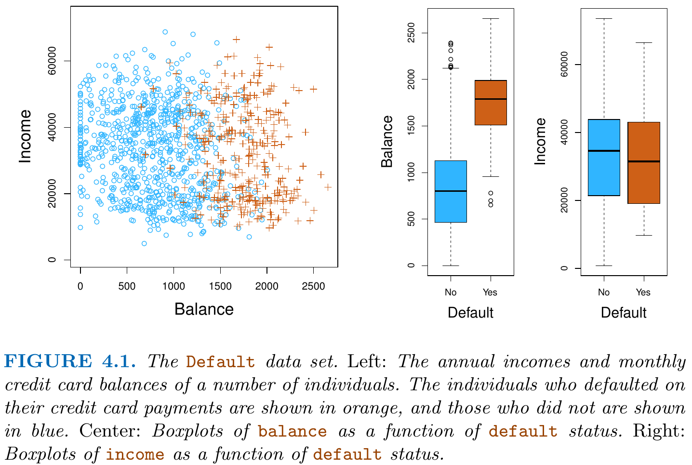
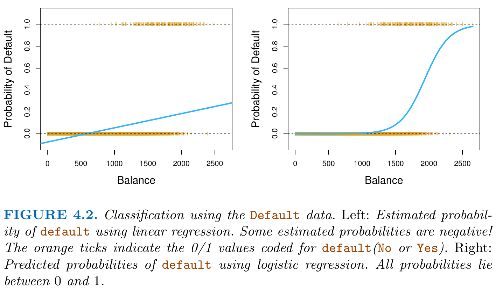
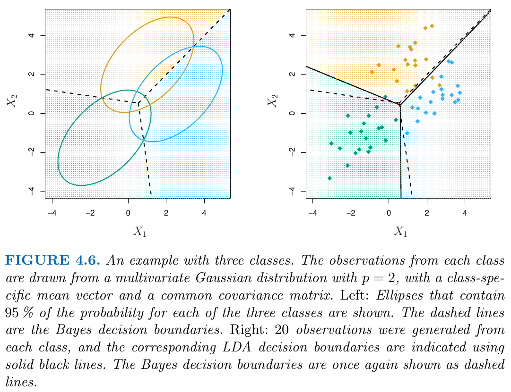
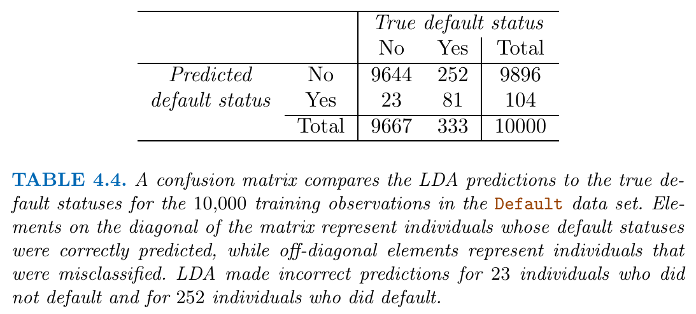
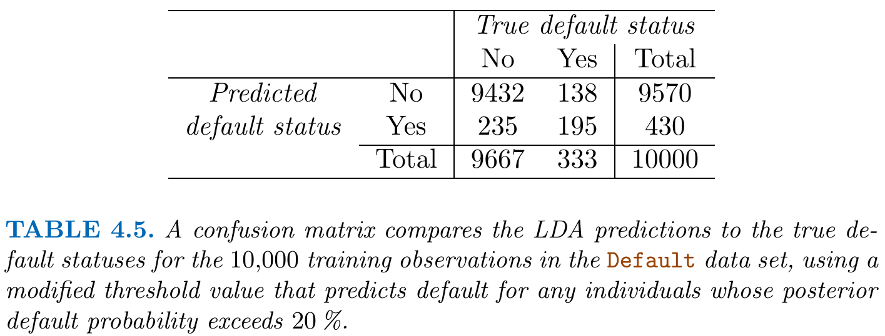
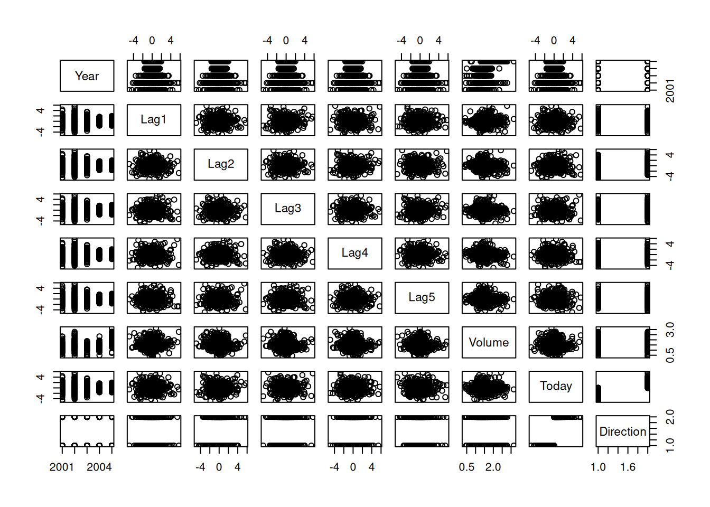
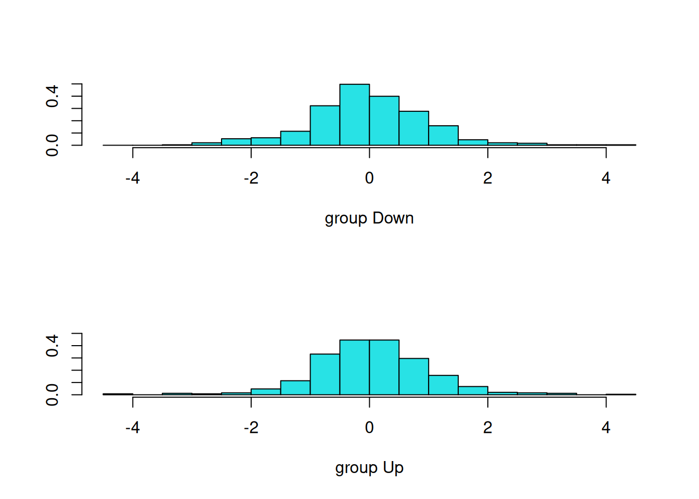

suppressPackageStartupMessages(library("ISLR2"))
data(Default)
## sample size
n <- nrow(Default)
## "no-default"-rate and "default"-rate
table(Default$default)/n
No Yes
0.9667 0.0333 Classification problems occur often, perhaps even more so than regression problems.
Some examples include:
One of the running example for this chapter: The (simulated) Default data set which is part of the online resources of our textbook ISLR, and which is also contained in the R package ISLR2. 
Let’s take a first look at the a priori default rate in this dataset:
suppressPackageStartupMessages(library("ISLR2"))
data(Default)
## sample size
n <- nrow(Default)
## "no-default"-rate and "default"-rate
table(Default$default)/n
No Yes
0.9667 0.0333 Note: Figure 4.1 shows only a small fraction of the individuals who did not default to avoid an overcrowded plot.
Linear regression is often not appropriate in the case of a qualitative response \(Y.\)
Suppose that we are trying to predict the medical condition of a patient in the emergency room on the basis of her symptoms. In this simplified example, there are three possible diagnoses:
We can encode these values as a quantitative response variable for subject \(i\), \[ Y_i=\left\{ \begin{array}{ll} 1&\quad\text{if }\texttt{diagnose}_i=\texttt{stroke}\\ 2&\quad\text{if }\texttt{diagnose}_i=\texttt{drug overdose}\\ 3&\quad\text{if }\texttt{diagnose}_i=\texttt{epileptic seizure}\\ \end{array} \right. \] Using this coding, least squares could be used to fit a linear regression model to predict \(Y_i,\) but
Generally, both points are quite problematic for most applications.
Only if the response variable’s values did take on a natural ordering, such as “mild”, “moderate”, and “severe”, and we felt the gap between mild and moderate was similar to the gap between moderate and severe, then a 1, 2, 3 coding would be reasonable.
For a binary (two level) qualitative response, the situation is better. For instance, if there are only two conditions that we need to predict (e.g. either \(\texttt{default}_i=\texttt{Yes}\) or \(\texttt{default}_i=\texttt{No}\)), we can use a dummy variable coding \[ Y_i=\left\{ \begin{array}{ll} 1&\quad\text{if }\texttt{default}_i=\texttt{Yes}\\ 0&\quad\text{if }\texttt{default}_i=\texttt{No}\\ \end{array} \right. \qquad(5.1)\] We could then fit a linear regression to this binary response, and predict drug overdose if \(\hat{Y}_i > 0.5\) and stroke otherwise. In the binary case it is not hard to show that even if we flip the above coding, linear regression will produce the same final predictions.
For a binary response, \(Y_i\in\{0,1\},\) as in Equation 5.1, linear regression is not completely unreasonable. For the multiple linear regression model, we have that \[ \begin{align*} Y_i &= \beta_0+ \beta_1 X_{i1}+\dots +\beta_p X_{ip} + \epsilon_i, \end{align*} \] where, under the assumptions of Chapter 2, \[ E(\epsilon_i|X_i)=0. \] Therefore, \[ \begin{align*} E(Y_i|X_i) &=E\left(\beta_0+ \beta_1 X_{i1}+\dots +\beta_p X_{ip} + \epsilon_i|X_i\right)\\[2ex] &=\beta_0+ \beta_1 X_{i1} + \dots +\beta_p X_{ip}. \end{align*} \qquad(5.2)\] Moreover, since \(Y_i\in\{0,1\}\) is a binary random variable, the conditional mean \(E(Y_i|X_i)\) equals the conditional probability of \(Y_i=1\) given \(X_i\colon\) \[ \begin{align*} E(Y_i|X_i) & = P(Y_i=1|X_i)\cdot 1 + P(Y_i=0|X_i)\cdot 0\\[2ex] & = P(Y_i=1|X_i). \end{align*} \qquad(5.3)\] Combining Equation 5.2 and Equation 5.3 yields \[ \begin{align*} P(Y_i=1|X_i) &=\beta_0+ \beta_1 X_{i1} +\dots +\beta_p X_{ip} \end{align*} \]
Thus the estimated linear model approximates the conditional probability of \(Y_i=1\) (e.g. \(\texttt{default}_i=\texttt{Yes}\)) given \(X_i\colon\) \[ \begin{align*} P(Y_i=1|X_i) & \approx \widehat{P}(Y_i=1|X_i)\\[2ex] & = \widehat{E}(Y_i|X_i)\\[2ex] & = \hat{Y}_i\\ & = \hat\beta_0+ \hat\beta_1 X_{i1} + \dots + \hat\beta_p X_{ip}. \end{align*} \]
The actual classification of an observation \(i\) with predictor values \(x_i\in\mathbb{R}^p\) is done using a certain probability threshold, such as \(0.5\):
\[ \hat{f}(x_i) = \left\{ \begin{array}{l} 1\quad\text{if}\quad\widehat{P}(Y_i=1|x_i) > 0.5\\[2ex] 0\quad\text{if}\quad\widehat{P}(Y_i=1|x_i) \leq 0.5\\[2ex] \end{array} \right. \]
However, if we use linear regression, some of our estimates \[ \widehat{P}(Y_i=1|x_i) \] might be outside the \([0, 1]\) interval (see left panel in Figure 4.2), which doesn’t make sense when predicting probabilities. 
Summary:
Thus, it is often preferable to use a classification method that is truly suited for qualitative response values such as, for instance, logistic regression.
Setup:
The alternative to the training MSE (introduced in Section 4.3) is here the training error rate \[ \frac{1}{{n_{\text{Train}}}}\sum_{i=1}^{n_{\text{Train}}} I(Y_i\neq \hat{Y}_i),\quad \hat{Y}_i = \hat{f}(X_i), \] which gives the relative frequency of false categorical predictions, \[ I(\cdot) \] is the indicator function with \(I(\text{true})=1\) and \(I(\text{false})=0.\)
Let \[ \{(Y_{1}^{\text{Test}},X_{1}^{\text{Test}}), (Y_{2}^{\text{Test}},X_{2}^{\text{Test}}),\dots, (Y_{n_{\text{Test}}}^{\text{Test}},X_{n_{\text{Test}}}^{\text{Test}})\} \] denote \(n_{\text{Test}}\) test data observations.
The alternative to the test MSE is here the test error rate \[ \frac{1}{n_{\text{Test}}}\sum_{i=1}^{n_{\text{Test}}} I(Y_{i}^{\text{Test}} \neq \hat{Y}_{i}^{\text{Test}}), \] where \[ \hat{Y}_{i}^{\text{Test}}=\hat{f}(X_{i}^{\text{Test}}) \] is the predicted class label that results from applying the classifier \(\hat{f}\) (computed from the training data) to the test observation \(X_{i}^{\text{Test}}.\)
A good classifier is one for which the test error rate is small.
It is possible to show (proof is outside of the scope of this course) that the test error rate is minimized, on average, by the classifier that assigns an observation to the most likely class, given its predictor value \(x_{0}.\) This classifier is called the Bayes classifier.
In other words, the Bayes classifier assigns a subject \(i\) with predictor vector value \(X_i=x_{0}\) to the class \(j\) for which \[ P(Y_i = j | X_i = x_{0}) \] is largest among all possible class labels \(j\) (e.g. \(j\in\{1,2\}\)).
In a two-class problem where there are only two possible response values, say class \(1\) or class \(2,\) such that \(Y_i\in\{1,2\}\), the Bayes classifier predicts class \(1\) for subject \(i\) if \[ P(Y_i = 1| X_i = x_0 ) \geq 0.5, \] and class \(2\) if \[ \begin{align*} & P(Y_i = 1| X_i = x_0 ) < 0.5 \\[2ex] \Leftrightarrow\; & P(Y_i = 2| X_i = x_0 ) > 0.5 \end{align*} \]
Those predictor values \(x_0\) for which \[ \begin{align*} P(Y_i = 1| X_i = x_0 ) = 0.5 = P(Y_i = 2| X_i = x_0 ) \end{align*} \] are called the Bayes decision boundary. An example of a Bayes decision boundary is shown as the purple dashed line in Fig. 2.13.

Note to Fig. 2.13: Here, a perfect classification (i.e. zero error rate) is impossible, since the Bayes decision boundary does not partition the two groups (yellow, blue) in to complete separate groups.
The Bayes classifier produces the lowest possible test error rate, called the Bayes error rate. The local Bayes error rate at \(x_0\) is given by \[ 1 - \max_{k\in\{1,\dots,K\}}P(Y_i = k| X_i = x_0 ), \] where the maximization is over all class labels \(k\in\{1,\dots,K\}.\)
The global overall Bayes error rate is given by \[ 1 - E\left(\max_{k\in\{1,\dots,K\}}P(Y_i = k| X_i)\right), \] where the expectation averages the probability over all possible values of \(X_i.\)
If no further information is given, one uses usually a threshold of \(0.5\) in a two-class classification problem; or, more generally, a threshold of \(\frac{1}{K}\) in a \(K\)-classes classification problem.
However, in certain applications, different thresholds are used. If, for instance, a certain classification error is very costly, we want to take this into account when choosing the classification threshold in order to the reduce the costs due to miss-classifications.
Example: \[ Y_i\in\{\text{Person $i$ pays back}, \text{Person $i$ does not pay back}\} \] The classification error \[ \hat{Y}_i=\text{Person $i$ pays back} \neq Y_i = \text{Person $i$ does not pay back} \] can be very costly for a bank. So, it can make sense to classify a person with a certain predictor value \(x_0\) to the “Person pays back”-class only if, for instance, \[ \widehat{P}(Y_i = \text{Person $i$ pays back}|X_i=x_0) \geq 0.9, \] and otherwise classify this person to the “Person does not pay back”-class. This will reduce the frequency of miss-classifications when classifying into the “Person pays back”-class, and thus reduce the costs.
In theory we would always like to predict qualitative responses using the Bayes classifier. But for real data, we do not know the true conditional distribution of \(Y_i\) given \(X_i,\) and so computing the Bayes classifier is impossible.
Many approaches attempt to estimate the conditional distribution of \(Y_i\) given \(X_i,\) and then classify a given observation to the class with highest estimated probability. One such method is the \(K\)-Nearest Neighbors (KNN) classifier.
Given a positive integer \(K\) and a given predictor value \(x_0,\) the KNN classifier first identifies the \(K\) subjects (or firms, states) \(i\) with predictors \[ \{X_{1},\dots,X_{n_{\text{Train}}}\}, \] closest to \(x_0,\) by computing the distances \[ d(x_0,X_1),d(x_0,X_2),\dots,d(x_0,X_n) \] from \(x_0.\)
The set of \(K\) nearest neighbors (near to \(x_0\)) is represented by the \(x_0\)-specfic index set \[ \mathcal{N}_0 =\{i\in\{1,2,\dots,n_{\text{Train}}\} \; |\; d(x_0,X_i)\text{ is among the $K$ smallest distances}\} \] I.e. \(\mathcal{N}_0\) is the set of index values \(i\in\{1,2,\dots,n_{\text{Train}}\}\) for which \(d(x_0,X_i)\) is among the \(K\) smallest distances.
From the definition of \(\mathcal{N}_0\) is follows that:
Now, let \(Y\) denote the response of a new subject with predictor value \(X=x_0.\) Aim is to classify the new subject into one of the classes.
KNN estimates the conditional probability of \(Y=j\) given \(X=x_0,\) \[ P(Y = j | X = x_{0}) , \] as the fraction of the \(K\) training data responses \(Y_i\) with \(i\in\mathcal{N}_0\) whose response value \(Y_i\) equals \(j\colon\) \[ \begin{align} P(Y = j | X = x_{0}) &\approx \widehat{P}(Y = j | X = x_{0})\\[2ex] &= \frac{1}{K}\sum_{i\in\mathcal{N}_0}I(Y_i = j), \end{align} \] where \(I(\texttt{TRUE})=1\) and \(I(\texttt{FALSE})=0.\)
Finally, KNN classifies the new subject with predictor value \(X=x_0\) to that class \(j\) which has the largest conditional probability, i.e. \[ \hat{f}_K(x_0) = \arg\max_j \widehat{P}(Y=j|x_0). \]
Figure 2.14 provides an illustrative example of the KNN approach:

Left-hand panel of Figure 2.14: KNN-classification with \(K=3\) classifies a new subject with predictor value \(X=x_0\) (\(x_0\)-value marked by the black cross) into group \(\texttt{blue},\) since
\[
\widehat{P}(Y=\texttt{blue}|x_0) = \frac{2}{3} > \frac{1}{3} = \widehat{P}(Y=\texttt{orange}|x_0).
\]
Right-hand panel of Figure 2.14: KNN-classification with \(K = 3\) applied to predictor values \(x_0=(x_{10},x_{20})^\top\) over a fine grid across all possible predictor values. The black lines correspond to those values \(x_0=(x_{10},x_{20})^\top\) for which \[ \widehat{P}(Y=\texttt{blue}|x_0) = \widehat{P}(Y=\texttt{orange}|x_0). \] and thus show the estimated KNN decision boundary.
Figures 2.15 and Figure 2.16 show the results for \(K=10,\) \(K=1,\) and \(K=100.\)


Figure 2.17 shows the training error rate \[ \frac{1}{{n_{\text{Train}}}}\sum_{i=1}^{n_{\text{Train}}} I(Y_i\neq \hat{Y}_i),\quad \hat{Y}_i = \hat{f}(X_i), \] and the test error rate \[ \frac{1}{n_{\text{Test}}}\sum_{i=1}^{n_{\text{Test}}} I(Y_{i}^{\text{Test}} \neq \hat{Y}_{i}^{\text{Test}}), \] for different values of \(1/K,\) \[ \frac{1}{K}=\frac{1}{100},\dots,\frac{1}{K}=\frac{1}{1}. \]

Logistic regression models the probability that \(Y_i\) belongs to a particular category. We begin with \(K=2\) category problems, and consider \(K>2\) category problems later in Section 5.6.5.
For the Default dataset, logistic regression models the conditional probability of \(\texttt{default}_i\in\{\texttt{Yes},\texttt{No}\}\) given values for the predictor(s) \(X_i,\) \[
P(\texttt{default}_i=\texttt{Yes}|\texttt{balance}_i) = p(\texttt{balance}_i),
\] where \(p(\texttt{balance}_i)\in[0,1]\) is used as a short hand notation.
Then, since \(K=2,\) \[ P(\texttt{default}_i=\texttt{No}|\texttt{balance}_i) = 1 - p(\texttt{balance}_i). \]
One might predict the event \(\texttt{default}_i=\texttt{Yes}\) for any individual \(i\) with a \(\texttt{balance}_i\)-value such that
\[
p(\texttt{balance}_i) > 0.5.
\]
For a binary coded dependent variable \(Y_i\in\{0,1\}\) we aim to model the relationship between \[ p(X_i)=P(Y_i=1|X_i)\quad\text{and}\quad X_i. \]
As discussed above, a linear regression model, e.g., \[ p(X_i)=\beta_0+\beta_1 X_i \] can produce nonsense predictions with \(p(X_i)\not\in[0,1];\) see the left panel of Figure 4.2.
Logistic regression avoids this problem by assuming that \(p(X_i)\) can be modeled using the logistic function, \[ p(X_i)=\frac{e^{\beta_0+\beta_1 X_i}}{1+e^{\beta_0+\beta_1 X_i}}. \] To fit the parameters \(\beta_0\) and \(\beta_1\) we use an estimation method called maximum likelihood.
The right panel of Figure 4.2 illustrates the fit of the logistic regression model to the Default data.
Note that \[ \begin{align*} p(X_i) & = \frac{e^{\beta_0+\beta_1 X_i}}{1+e^{\beta_0+\beta_1 X_i}} %\frac{p(X)}{1-p(X)} & = \frac{\frac{e^{\beta_0+\beta_1 X}}{1+e^{\beta_0+\beta_1 X}}}{1-p(X)} \\ %\frac{p(X)}{1-p(X)} & = \frac{\frac{e^{\beta_0+\beta_1 X}}{1+e^{\beta_0+\beta_1 X}}}{1-\frac{e^{\beta_0+\beta_1 X}}{1+e^{\beta_0+\beta_1 X}}} \\ %\frac{p(X)}{1-p(X)} & = \frac{\frac{e^{\beta_0+\beta_1 X}}{1+e^{\beta_0+\beta_1 X}}}{\frac{1+e^{\beta_0+\beta_1 X}}{1+e^{\beta_0+\beta_1 X}}-\frac{e^{\beta_0+\beta_1 X}}{1+e^{\beta_0+\beta_1 X}}} \\ \quad \Leftrightarrow\quad \frac{p(X_i)}{1-p(X_i)} = e^{\beta_0+\beta_1 X_i} \end{align*} \]
The quantity \[ 0\leq \frac{p(X_i)}{1 − p(X_i)} \leq \infty \] is called the odds, and can take any value between 0 and plus infinity.
For instance:
An odds value of \(\frac{1}{4}\) means that \(0.2=20\%\) of the people will default \[ \frac{0.2}{1-0.2}=\frac{1}{4} \]
An odds value of \(9\) means that \(0.9=90\%\) of the people will default \[ \frac{0.9}{1-0.9}=9 \]
By taking the logarithm, we arrive at log odds or logit \[ \ln\left(\frac{p(X_i)}{1-p(X_i)}\right) = \beta_0+\beta_1 X_i \qquad(5.4)\]
Thus increasing \(X_i\) by one unit …
Non-Linearity:
The amount that \(p(X_i)\) changes due to a one-unit change in \(X_i\) depends on the current value of \(X_i.\) That is, the simple logistic regression model is not linear in the parameters \(\beta_0\) and \(\beta_1.\)
Monotonicity:
But regardless of the value of \(X_i\), if \(\beta_1\) is positive then increasing \(X_i\) will be associated with increasing \(p(X_i)\), and if \(\beta_1\) is negative then increasing \(X_i\) will be associated with decreasing \(p(X_i).\)
In logistic regression analysis, the unknown model parameters are estimated using maximum likelihood.
Basic intuition: Find estimates \(\hat{\beta}_0\) and \(\hat{\beta}_1\) such that the predicted probability \(\hat{p}(X_i)\) for each person \(i\) corresponds as close as possible to its observed \(\texttt{default}_i\) status. I.e., choose \(\hat{\beta}_0\) and \(\hat{\beta}_1\) such that
simultaneously for all \(i=1,\dots,n.\)
Let \[ Y_i=\left\{\begin{array}{ll} 1&\;\text{if }\texttt{default}_i=\texttt{Yes}\\ 0&\;\text{if }\texttt{default}_i=\texttt{No}\\ \end{array}\right. \]
Then the idea of maximum likelihood can be formalized using the so-called likelihood function: \[ \begin{align*} \mathcal{L}(b_0,b_1) &=\prod_{i=1}^n \left(p(X_i)\right)^{Y_i}\left(1-p(X_i)\right)^{1-Y_i}\\[2ex] &=\prod_{i=1}^n \left(\frac{e^{b_0+b_1 X_i}}{1+e^{b_0+b_1 X_i}}\right)^{Y_i} \left(1-\frac{e^{b_0+b_1 X_i}}{1+e^{b_0+b_1 X_i}}\right)^{1-Y_i}\\[2ex] \end{align*} \] The estimates \(\hat\beta_0\) and \(\hat\beta_1\) are chosen to maximize this likelihood function, i.e. \[ (\hat\beta_0,\hat\beta_1)=\arg\max_{(b_0,b_1)\in\mathbb{R}^2}\mathcal{L}(b_0,b_1). \] Typically, one does not maximize the likelihood function but the log-likelihood function \[ \begin{align*} \ell(b_0,b_1) & = \ln(\mathcal{L}(b_0,b_1))\\[2ex] & = \ln\left(\prod_{i=1}^n \left(\frac{e^{b_0+b_1 X_i}}{1+e^{b_0+b_1 X_i}}\right)^{Y_i} \left(1-\frac{e^{b_0+b_1 X_i}}{1+e^{b_0+b_1 X_i}}\right)^{1-Y_i}\right)\\[2ex] %& = \ln\left(\prod_{i=1}^n %\left(\frac{1}{1+e^{-b_0-b_1 x_i}}\right)^{y_i} %\left(1-\frac{1}{1+e^{-b_0-b_1 x_i}}\right)^{1-y_i}\right)\\[2ex] %&= \sum_{i=1}^n \Bigg( y_i \ln \left( \frac{1}{1 + \exp(-b_0-b_1 x_i)} \right)\\ %&\qquad + (1 - y_i) \ln \left( 1 - \frac{1}{1 + \exp(-b_0-b_1 x_i)} \right) \Bigg) \\[2ex] %&= \sum_{i=1}^n \Bigg( y_i \ln \left( \frac{1}{1 + \exp(-b_0-b_1 x_i)} \right) \\ %&\qquad + (1 - y_i) \ln \left( \frac{\exp(-b_0-b_1 x_i)}{1 + \exp(-b_0-b_1 x_i)} \right) \Bigg) \\[2ex] %&= \sum_{i=1}^n \Bigg(\ln \left( \frac{\exp(-b_0-b_1 x_i)}{1 + \exp(-b_0-b_1 x_i)} \right) \\ %&\qquad + y_i \left(\ln \left( \frac{1}{1 + \exp(-b_0-b_1 x_i)} \right) - \ln \left( \frac{\exp(-b_0-b_1 x_i)}{1 + \exp(-b_0-b_1 x_i)} \right) \right) \Bigg) \\[2ex] &=\dots \text{rearranging terms} \dots \\[2ex] &= \sum_{i=1}^n \left( -\ln(1 + \exp(b_0 + b_1 X_i)) + Y_i (b_0 + b_1 X_i) \right). \end{align*} \] which yields the same solutions, since the logarithm applies only a monotonic transformation.
Thus, the estimates \(\hat\beta_0\) and \(\hat\beta_1\) are chosen to maximize the log-likelihood function, \[ (\hat\beta_0,\hat\beta_1)=\arg\max_{(b_0,b_1)\in\mathbb{R}^2}\ell(b_0,b_1). \]
In general, there is no analytical solution of this maximization problem and a solution must be found numerically, for instance, using the Newton-Raphon Algorithm.
Maximum likelihood is a very general estimation method that allows to estimate also non-linear models (like the logistic regression model).
Table 4.1 shows the coefficient estimates and related information that result from fitting a logistic regression model on the Default data in order to predict the probability of \(Y_i=1\) (i.e. \(\texttt{default}_i=\texttt{Yes}\)) using \(\texttt{balance}_i\) as the only predictor. 
Interpretation:
balance is associated with an increase in the probability of default.
balance is associated with an increase in the log odds of default by 0.0055 units.Once the coefficients have been estimated, we can compute the probability of \(Y=1,\) i.e. \(\texttt{default}=\texttt{Yes},\) for a new person with predictor value \(\texttt{balance}.\)
For example, using the coefficient estimates given in Table 4.1, we predict that the default probability for an individual with a \(\texttt{balance}\)-value of 1,000 [USD] is \[ \begin{align*} \hat{p}(\texttt{balance}=1000) &=\widehat{P}(\texttt{default}=\texttt{Yes}|\texttt{balance}=1000)\\[2ex] %&=\frac{e^{\hat\beta_0+\hat\beta_1 \texttt{balance}}}{1+e^{\hat\beta_0+\hat\beta_1 \texttt{balance}}}\\[2ex] &=\frac{e^{-10.6513+ 0.0055\times 1000}}{1+e^{-10.6513+ 0.0055\times 1000}}\\[2ex] &= 0.00576 < 1\% \end{align*} \]
By contrast, the default probability for an individual with a \(\texttt{balance}\)-value of 2,000 [USD] is \[ \begin{align*} \hat{p}(\texttt{balance}=2000) &=\widehat{P}(\texttt{default}=\texttt{Yes}|\texttt{balance}=2000)\\[2ex] %&=\frac{e^{\hat\beta_0+\hat\beta_1 \texttt{balance}}}{1+e^{\hat\beta_0+\hat\beta_1 \texttt{balance}}}\\[2ex] &=\frac{e^{-10.6513+ 0.0055\times 2000}}{1+e^{-10.6513+ 0.0055\times 2000}}\\[2ex] & = 0.586 \end{align*} \] and is thus much higher.
Similarly, one can do prediction using qualitative predictors such as \[ \texttt{student}\in\{\texttt{Yes}, \texttt{No}\} \]

\[ \begin{align*} &\widehat{P}(\texttt{default}=\texttt{Yes}|\texttt{student}=\texttt{Yes})\\[2ex] &=\frac{e^{-3.5041+0.4049\times 1}}{1+e^{-3.5041+0.4049\times 1}}\\[2ex] &= 0.0431\\[4ex] &\widehat{P}(\texttt{default}=\texttt{Yes}|\texttt{student}=\texttt{No})\\[2ex] &=\frac{e^{-3.5041+0.4049\times 0}}{1+e^{-3.5041+0.4049\times 0}}\\[2ex] &= 0.0292\\ \end{align*} \]
This may indicate that students tend to have higher default probabilities than non-students. But we may miss further relevant factors here as we only use one predictor variable. Thus, this result may be driven by an omitted-variable bias.
To control for other confounding predictors, we may need to use multiple logistic regression.
By analogy with the extension from simple to multiple linear, we can generalize the (simple) logistic regression model as following \[ \begin{align*} p(X_i) &=\frac{e^{\beta_0+\beta_1 X_{i1}+\dots+\beta_p X_{ip}}}{1+e^{\beta_0+\beta_1 X_{i1}+\dots+\beta_p X_{ip}}}\\[2ex] \ln\left(\frac{p(X_i)}{1-p(X_i)}\right) &= \beta_0+\beta_1 X_{i1}+\dots+\beta_p X_{ip},\\ \end{align*} \] where \(X_i=(X_{i1},\dots,X_{ip})^\top,\) and where the unknown parameters \(\beta_0,\dots,\beta_p\) are estimated by maximum likelihood.

Interestingly, the effect of the dummy variable student[Yes] is now negative, in contrast to the estimation results of the (simple) logistic regression in Table 4.2 where it was positive.
The negative coefficient for student in the multiple logistic regression indicates that for fixed values of balance and income, a student is less likely to default than a non-student.
The left panel of Figure 4.3 provides a graphical illustration of this apparent paradox:
balance, the (overall) default rates of students are higher than those of non-students (horizontal broken lines). This overall effect was shown in Table 4.2.balance-values, the default rate for students is lower than for non-students (solid lines).
The right panel of Figure 4.3 provides an explanation for this discrepancy: Students tend to hold higher levels of debt, which is in turn associated with higher probability of default.
Summary:
In other words: A student is riskier than a non-student if no information about the student’s credit card balance is available. However, a student is less risky than a non-student if both have the same credit card balance.
It is possible to extend the two-class logistic regression approach to the setting of \(K > 2\) classes. This extension is sometimes known as multinomial logistic regression.
To do this, we first select a single class to serve as the baseline class; without loss of generality, we select the \(K\)th class for this role.
We model the probabilities that \(Y=k\), for \(k=1,\dots,K\), using \(k\)-specific parameters \(\beta_{k0},\dots,\beta_{kp}\) with \[ \begin{align*} p_k(x) & = P(Y=k|X=x)\\[2ex] & = \frac{e^{\beta_{k0} + \beta_{k1} x_1 + \dots + \beta_{kp} x_p}}{1+\sum_{\ell=1}^{K-1}e^{\beta_{\ell 0} + \beta_{\ell 1} x_1 + \dots + \beta_{\ell p} x_l}} \end{align*} \] for \(k=1,\dots,K-1\), and \[ \begin{align*} p_K(x) & =P(Y=K|X=x)\\[2ex] & =\frac{1}{1+\sum_{\ell=1}^{K-1}e^{\beta_{\ell 0} + \beta_{\ell 1} x_1 + \dots + \beta_{\ell p} x_l}} \end{align*} \] for the baseline class \(K.\)
For \(k=1,\dots,K-1\) it holds that \[ \begin{align*} \ln\left(\frac{P(Y=k|X=x)}{P(Y=K|X=x)}\right) &=\ln\left(\frac{\frac{e^{\beta_{k0} + \beta_{k1} x_1 + \dots + \beta_{kp} x_p}}{1+\sum_{\ell=1}^{K-1}e^{\beta_{\ell 0} + \beta_{\ell 1} x_1 + \dots + \beta_{\ell p} x_l}}}{\frac{1}{1+\sum_{\ell=1}^{K-1}e^{\beta_{\ell 0} + \beta_{\ell 1} x_1 + \dots + \beta_{\ell p} x_l}}}\right)\\[2ex] &=\ln\left(e^{\beta_{k0} + \beta_{k1} x_1 + \dots + \beta_{kp} x_p}\right)\\[2ex] &=\beta_{k0} + \beta_{k1} x_1 + \dots + \beta_{kp} x_p \end{align*} \] which is the counterpart to the log odds equation for \(K=2\) (see Equation 5.4)
Note that:
The predictions \(\hat{p}_k(x)\), for \(k=1,\dots,K\) do not depend on the choice of the baseline class.
However, interpretation of the coefficients in a multinomial logistic regression model must be done with care, since it is tied to the choice of baseline.
Let \(Y\) denote the response of a new subject with predictor value \(X=x.\) Aim is to classify the new subject into one of the classes \(k=1,\dots,K.\)
We now consider an alternative approach to estimating the probabilities \[ P(Y=K|X=x). \]
Suppose that we wish to classify an observation into one of \(K\geq 2\) classes.
Prior Probability: Let \[ \pi_k=P(Y=k) \] represent the overall prior probability that a randomly chosen observation comes from class \(k.\) We have that \[ \pi_1+\dots+\pi_K=1. \]
Conditional Probability of \(X=x\) given \(Y=k:\) Let \[ f_k(x)=P(X=x|Y=k) \]
Posterior Probability: Then Bayes’ theorem states that the probability that a observation with predictor value \(X=x\) comes from class \(k\) (i.e. the posterior probability), is given by \[ \begin{align*} p_k(x) & = P(Y=k|X=x)\\[2ex] & = \frac{P(Y=k\;\text{ and }\;X=x)}{P(X=x)}\\[2ex] & = \frac{P(Y=k)\,P(X=x|Y=k)}{P(X=x)}\\[2ex] & = \frac{\pi_k f_k(x)}{\sum_{\ell=1}^K\pi_{\ell} f_{\ell}(x)}, \end{align*} \qquad(5.5)\] where \[ \begin{align*} P(X = x) &= \sum_{k=1}^K \underbrace{P(Y = k)}_{\pi_k} \;\underbrace{P(X = x|Y=k)}_{f_k(x)} \\[2ex] &= \sum_{k=1}^K \pi_k f_k(x) \end{align*} \]
Note that Equation 5.5 also applies to real-valued predictors \(X\) (i.e. continuous random variables \(X\in\mathbb{R}^p\)) even though for continuous random variables \(X\) we have that
The technical argument is that \[ \frac{P(Y=k)\,P(X=x|Y=k)}{P(X=x)} = \frac{P(Y=k)\,P(X=x|Y=k)dx}{P(X=x)dx}, \] where
correspond to the probabilities of \(X\) falling in a small region \(dx\) around \(x\) conditionally and unconditionally on \(Y=k,\) respectively.
While logistic regression estimates the posterior probability \(p_k(x)\) using a functional form assumption, Bayes’s theorem gives us a way to estimate \(p_k(x)\) simply by plugging in estimates of \(\pi_k\) and \(f_k(x)\).
We know from Section 5.4 that the Bayes classifier, which classifies an observation \(x\) to the class \(k\) for which \(p_k(x)\) is largest, has the lowest possible error rate out of all classifiers. Therefore, if we were able to estimate all unknown quantities in Equation 5.5, we will get a very good Classifier.
However, estimating the densities \(f_k(x)\) can be very challenging. Therefore, we have to make some simplifying assumptions such as, for instance, assuming that the predictors \(X\) are normally distributed.
In the following sections, we discuss three classifiers that use different estimates of \(f_k(x)\) to approximate the Bayes classifier:
For the beginning, let us assume that we have only a one-dimensional predictor \(X,\) i.e., \(p=1.\)
To estimate \(f_k(x)\), we will assume that \(f_k\) is normal (or Gaussian). In the simple \(p=1\) dimensional setting, the normal distribution is \[ f_k(x) = \frac{1}{\sqrt{2\pi}\sigma_k}\exp\left(-\frac{1}{2\sigma_k^2}(x-\mu_k)^2\right), \] where
In linear discriminant analysis, we further assume equal variances across all classes, i.e. \[ \sigma_1^2=\dots = \sigma_K^2\equiv \sigma^2; \] That is, discriminatory power comes from different means only.
In quadratic discriminant analysis (see Section 5.7.5) we will also consider the case where discriminatory power comes from both differences in means and variances.
Plugging this assumed (possibly wrong) version of \(f_k\) into Equation 5.5, leads to \[ p_k(x)=\frac{\pi_k \frac{1}{\sqrt{2\pi}\sigma}\exp\left(-\frac{1}{2\sigma^2}(x-\mu_k)^2\right)}{\sum_{l=1}^K\pi_l \frac{1}{\sqrt{2\pi}\sigma}\exp\left(-\frac{1}{2\sigma^2}(x-\mu_l)^2\right)}. \qquad(5.6)\]
The Bayes classifier involves assigning an observation with predictor value \(X = x\) to the class \(k\) for which \(p_k(x)\) is largest. Taking the \(\ln\) of Equation 5.6 (i.e. a monotonic transformation) and rearranging terms shows that this assignment mechanism is equivalent to assigning an observation \(X=x\) to the class \(k\) for which \[ \delta_k(x)=x\cdot\frac{\mu_k}{\sigma^2} - \frac{\mu_k^2}{2\sigma^2} + \ln(\pi_k) \] is largest. The function \(\delta_k(x)\) is called the discriminant function.
Example:
In the case of only two classes, \(K=2\), with equal a priori probabilities \[ \pi_1=\pi_2\equiv \pi, \] the Bayes classifier assigns an observation \(X=x\) to class \(1\) if \[ \begin{align*} \delta_1(x) & > \delta_2(x)\\[2ex] %%% x\cdot\frac{\mu_1}{\sigma^2} - \frac{\mu_1^2}{2\sigma^2} + \ln(\pi) & > x\cdot\frac{\mu_2}{\sigma^2} - \frac{\mu_2^2}{2\sigma^2} + \ln(\pi)\\[2ex] %%% x\cdot\frac{\mu_1}{\sigma^2} - \frac{\mu_1^2}{2\sigma^2} & > x\cdot\frac{\mu_2}{\sigma^2} - \frac{\mu_2^2}{2\sigma^2}\\[2ex] %%% x\cdot\mu_1 - \frac{\mu_1^2}{2} & > x\cdot\mu_2 - \frac{\mu_2^2}{2}\\[2ex] %%% 2x\cdot(\mu_1-\mu_2) & > \mu_1^2 - \mu_2^2\\[2ex] %%% x & > \frac{\mu_1^2 - \mu_2^2}{2(\mu_1-\mu_2)}\\[2ex] %%% x & > \frac{(\mu_1 - \mu_2)(\mu_1 + \mu_2)}{2(\mu_1-\mu_2)}\\[2ex] %%% x & > \frac{(\mu_1 + \mu_2)}{2} \end{align*} \] The Bayes decision boundary is the point for which \(\delta_1(x)=\delta_2(x);\) i.e., \[ \begin{align*} x %=\frac{\mu_1^2 - \mu_2^2}{2(\mu_1-\mu_2)} %&=\frac{(\mu_1 - \mu_2)(\mu_1 + \mu_2)}{2(\mu_1-\mu_2)}\\ &=\frac{(\mu_1 + \mu_2)}{2} \end{align*} \] Figure 4.4 shows a specific example with
The two densities \(f_1\) and \(f_2\) overlap such that for given \(X=x\) there is some uncertainty about the class to which the observation belongs to. In this example, the Bayes classifier assigns an observation \(X=x\) …

The above example (Figure 4.4) is based on artificial (simulated) data, where we know all (usually unknown) parameters
In practice, however, these parameters are usually unknown, and thus need to be estimated from the data.
The Linear Discriminant Analysis (LDA) method approximates the Bayes classifier by using the normality assumption and by plugging in estimates for the unknown parameters \(\pi_k\), \(\mu_k\), \(k=1,\dots,K\), and \(\sigma\).
The following estimators are used: \[ \begin{align*} \hat\pi_k & = \frac{n_k}{n}\\[2ex] \hat\mu_k & = \frac{1}{n_k}\sum_{i:y_i=k}x_i\\[2ex] & = \frac{1}{n_k} \sum_{i=1}^n x_iI(y_i=k)\\[2ex] \hat{\sigma}^2 & = \frac{1}{n-K}\sum_{k=1}^K\sum_{i:y_i=k}(x_i-\hat\mu_k)^2\\[2ex] & = \frac{1}{n-K}\sum_{k=1}^K\sum_{i=1}^n(x_i-\hat\mu_k)^2 I(y_i=k), \end{align*} \] where the variance estimate \(\hat\sigma\) pools the predictor \(x_i\) values across all groups \(k=1,\dots,K,\) and where \(I()\) denotes the indicator function with \(I(\text{true})=1\) and \(I(\text{false})=0.\)
The LDA classifier assigns an observation \(X=x\) to the class \(k\) for which \[ \hat\delta_k(x)=x\cdot\frac{\hat\mu_k}{\hat\sigma^2} - \frac{\hat\mu_k^2}{2\hat\sigma^2} + \ln(\hat\pi_k) \] is largest.
LDA is named linear since the discriminant functions \(\hat\delta_k(x)\), \(k=1,\dots,K\) are linear functions of \(x.\)
Assumptions made by the LDA method:
In the case of multiple predictors \[ X=(X_1,\dots,X_p)\quad \text{with}\quad p>1 \] we need to assume that the observations for each class \(k\) come from a multivariate Gaussian distribution with
That is, a \((p\times 1)\) random vector \(X\) of class \(k\) is distributed as \[ \begin{align*} X|Y=k & \sim \mathcal{N}_p\left(\mu_k,\Sigma\right) \end{align*} \] with class-specific \((p\times 1)\) mean vector \(\mu_k\), \[ \mu_k=E(X|Y=k)=\left(\begin{matrix} \mu_{k1}\\ \mu_{k2}\\ \vdots\\ \mu_{kp} \end{matrix}\right), \] and \((p\times p)\) covariance matrix, \(\Sigma,\) that is common for all classes \(k=1,\dots,K,\) i.e. \[ \Sigma=Cov(X|Y=1)=\dots=Cov(X|Y=K)=Cov(X), \] where \[ Cov(X)= \left( \begin{matrix} Var(X_1) &Cov(X_1,X_2)&\dots & Cov(X_1,X_p)\\ Cov(X_2,X_1)&Var(X_2) &\dots & Cov(X_2,X_p)\\ \vdots &\vdots &\ddots & \vdots \\ Cov(X_p,X_1)&Cov(X_p,X_2)&\dots & Var(X_p) \end{matrix} \right) \]
The multivariate Gaussian density for class \(k=1,\dots,K\) is defined as \[ f_k(x) = \frac{1}{(2\pi)^{p/2}|\Sigma|^{1/2}}\exp\left(-\frac{1}{2}(x-\mu_k)'\Sigma^{-1}(x-\mu_k)\right), \] where \(|\Sigma|\) denotes the determinant of the \((p\times p)\) matrix \(\Sigma.\)
Figure 4.5 shows the case of bivariate (\(p=2\)) Gaussian distribution predictors.

Under the multivariate normality assumption (with common covariance matrix and group-specific mean vectors) the Bayes classifier assigns an multivariate observation \(X=x\) to the class for which the discriminant function \[ \delta_k(x)=x' \Sigma^{-1}\mu_k - \frac{1}{2}\mu_k'\Sigma^{-1}\mu_k + \ln(\pi_k) \qquad(5.7)\] is largest.
The following estimators are used: \[ \begin{align*} \hat\pi_k & = \frac{n_k}{n}\\[2ex] \hat\mu_k & = \frac{1}{n_k}\sum_{i:y_i=k}x_i\\[2ex] & = \frac{1}{n_k}\sum_{i=1}^n x_iI(y_i=k)\\[2ex] \hat{\Sigma} & = \frac{1}{n-pK}\sum_{k=1}^K\sum_{i:y_i=k}(x_i-\hat\mu_k)(x_i-\hat\mu_k)'\\[2ex] & = \frac{1}{n-pK}\sum_{k=1}^K\sum_{i=1}^n (x_i-\hat\mu_k)(x_i-\hat\mu_k)' I(y_i=k), \end{align*} \] where
An artificial example (based on simulated data) for \(p=2\) and \(K=3\) (yellow, green, blue) with equal a priori probabilities \[ \pi_1=\pi_2=\pi_3 \] is shown in the left-hand panel of Figure 4.6. The three ellipses represent regions that contain \(95\%\) of the probability for each of the three classes. The dashed lines are the Bayes decision boundaries. In other words, they represent the set of values x for which \(\delta_k(x) = \delta_l(x)\), \(k\neq l\).

Default data exampleWe can perform LDA on the Default data in order to predict whether or not an individual will default using the two (\(p=2\)) predictor variables
Note: Student status is qualitative, and thus the normality assumption made by LDA is clearly violated in this example! However, LDA is often remarkably robust to model violations, as this example (apparently) shows.
The LDA model fit to the \(10,000\) training samples results in an overall training error rate of \(2.75\%:\)
# MASS package contains the lda() function
suppressPackageStartupMessages(library(MASS))
## Sample size
n <- nrow(Default)
lda_obj <- lda(default ~ balance + student,
data = Default)
ldaPredict_obj <- predict(lda_obj)
## Training error rate:
sum(Default$default != ldaPredict_obj$class)/n [1] 0.0275This sounds like a low error rate, but two caveats must be noted:
Any binary classifier can make two types of errors:
Depending on the context, both errors can have different application/context specific costs.
A confusion matrix shows both types of errors. The upper off-diagonal entry shows the FNs; the lower off-diagonal entry shows the FPs. A perfect confusion matrix has zeros in the off-diagonal entries.
## Confusion matrix
table(ldaPredict_obj$class, Default$default,
dnn = c("Predicted default status",
"True default status")) True default status
Predicted default status No Yes
No 9644 252
Yes 23 81
Let
\(P^*=\)Number of Predicted Positives with \(P^*=TP + FP\)
\(N^*=\)Number of Predicted Negatives with \(N^*=TN + FN\)
True/False Positive Predictions in Table 4.4:
LDA predicts that \(P^*=104\) people default, where
LDA predicts that \(N^*=9896\) people do not default, where
True Positive/Negative Rates:
False Positive/Negative Rates:
The small False Positive Rate of \(0.2\%\) is good since this means that trustworthy “no default” people are rarely labeled as non-trustworthy “default” people.
However, the high False Negative Rate of \(75.7\%\) is very problematic for a bank since this means that the bank often does not detect the non-trustworthy “default” people.
If a “False Negative Event” costs the bank more than a “False Positive Event” (or vice versa), then the bank will want to adjust the classifying threshold of the classifier.
In binary (\(K=2\)) classifications, the Bayes classifier, and thus also all classifiers which try to approximate the Bayes classifier, use a threshold of \(50\%\). I.e., a person \(i\) with predictor value \(X=x_i\) is assigned to the default\(=\)Yes class if \[
P(\texttt{default}_i=\texttt{Yes}|X=x_i)>0.5.
\]
However, if the costs of False Negatives (FN) are higher than the costs of False Positives (FP), one can consider lowering the classifying threshold. This decreases the predicted negatives (N\(^*\)) and thus also decreases the False Negatives (FN) since N\(^*=\)TN\(+\)FN.
For instance, we might classify any person \(i\) with a posterior probability of default above \(20\%,\) \[
P(\texttt{default}=\texttt{Yes}|X=x_i)>0.2,
\] into the default\(=\)Yes class.
## Predicted posterior probabilities
## head(ldaPredict_obj$posterior)
## Container for the predicted classes
PredictedDefault <- rep("No", n)
## Fill in the "Yes" classifications
PredictedDefault[ldaPredict_obj$posterior[,2]>0.2] <- "Yes"
## Confusion matrix for 0.2 threshold:
table(PredictedDefault, Default$default,
dnn = c("Predicted default status",
"True default status")) True default status
Predicted default status No Yes
No 9432 138
Yes 235 195
Changing the threshold from \(0.5\) to \(0.2\) …
For a credit card company, this slight increase in the overall error rate can be a small price to pay for a more accurate identification of people who indeed default.
Table 4.6 and 4.7 summarize the different classification performance measures.

The (Receiver Operating Characteristics) ROC curve is a popular graphic for displaying the \[ \text{TP Rate}=\text{TP/P}\quad \text{(sensitivity or power)} \] against the \[ \text{FP Rate}=\text{FP/N} \quad \text{($1-$ specificity or type I error)} \] for all possible threshold values (from zero to one).
The following R-codes provides a “by hand” implementation of a plot of the ROC curve for LDA applied to the Default-dataset.
## Considered thresholds (exclude the trivial 0/1 values)
thresholds <- seq(from = 0, to = 1, length.out = 250)
n_thresholds <- length(thresholds)
## Container for the predicted classes
PredictedDefault_mat <- matrix("No", n, n_thresholds)
## Fill in the "Yes" classifications
for(j in 1:n_thresholds){
PredicedYes <- ldaPredict_obj$posterior[,2] > thresholds[j]
PredictedDefault_mat[PredicedYes, j] <- "Yes"
}
## Number of actual positives
P <- length(Default$default[Default$default == "Yes"])
## Number of actual negatives
N <- length(Default$default[Default$default == "No"])
TP_Rate <- numeric(n_thresholds)
FP_Rate <- numeric(n_thresholds)
for(j in 1:n_thresholds){
## Classification results among the actually positives
Classifications_among_trueYes <- PredictedDefault_mat[,j][Default$default == "Yes"]
## Classification results among the actually negatives
Classifications_among_trueNo <- PredictedDefault_mat[,j][Default$default == "No"]
## Number of True Positives
TP <- length(Classifications_among_trueYes[Classifications_among_trueYes == "Yes"])
## Number of False Positives
FP <- length(Classifications_among_trueNo[Classifications_among_trueNo == "Yes"])
## TP error rate:
TP_Rate[j] <- TP/P
## FP error rate:
FP_Rate[j] <- FP/N
}
## Layout for the plotting region (two plots side-by-side)
layout(matrix(1:2, ncol=2), width = c(2,1),height = c(1,1))
col_range <- hcl.colors(n = n_thresholds,
palette = "viridis")
## Plot the ROC curve
plot(x = FP_Rate,
y = TP_Rate,
col = col_range,
xlab = "False Positive Rate",
ylab = "True Positive Rate",
main = "ROC Curve",
type = "o", lwd=1.5, pch = 19)
abline(a = 0, b = 1, lty = 3, col = "gray")
## Color-Legend for threshold values
legend_image <- as.raster(matrix(rev(col_range), ncol=1))
plot(c(0,2),c(0,1), type = "n", axes = FALSE, xlab = "", ylab = "", main = 'Threshold-Value')
text(x = 1.5,
y = seq(from = 0, to = 1, l = 5),
labels = seq(from = 0, to = 1, l=5))
rasterImage(legend_image, xleft = 0, ybottom = 0, xright = 1, ytop = 1)The commonly reported summary statistic for the ROC curve is the “Area Under the (ROC) Curve” AUC
The R package ROCR contains functions for computing and plotting the ROC curve and for computing the AUC value.
## install.packages("ROCR")
library("ROCR")
## Caution: Choose the posterior probability column carefully,
## it may be lda.pred$posterior[,1] or lda.pred$posterior[,2],
## depending on your factor levels
## Predicted and actual classes:
predict <- prediction(ldaPredict_obj$posterior[,2], Default$default)
## compute TP-Ratios and FP-Ratios:
perform <- performance(predict, "tpr", "fpr")
## ROC curve
plot(perform, colorize = TRUE)
## AUC
AUC <- performance(predict, measure = "auc")
print(AUC@y.values)[[1]]
[1] 0.9495584Unlike LDA, QDA assumes that each class has its own covariance matrix. That is, it assumes that an observation from the kth class is of the form \[ X|Y=k \sim \mathcal{N}_p(\mu_k,\Sigma_k), \] where \(\Sigma_k\) is a \((p\times p)\) covariance matrix for the \(k\)th class.
Under this assumption, the Bayes classifier assigns an observation \(X=x\) to the class for which \[ \begin{align*} &\delta_k(x)=\\ &= - \frac{1}{2}\left(x-\mu_k\right)'\Sigma_k^{-1}\left(x-\mu_k\right) - \frac{1}{2}\ln\left(|\Sigma_k|\right) + \ln(\pi_k)\\ &= - \frac{1}{2}x' \Sigma_k^{-1}x + \frac{1}{2}x' \Sigma_k^{-1}\mu_k - \frac{1}{2}\mu_k'\Sigma_k^{-1}\mu_k - \frac{1}{2}\ln\left(|\Sigma_k|\right) + \ln(\pi_k) \end{align*} \] is largest.
This classifier is called quadratic discriminant analysis since the predictor-value \(x\) appears as a quadratic function.
The following estimators are used: \[ \begin{align*} \hat\pi_k & = \frac{n_k}{n}\\[2ex] \hat\mu_k & = \frac{1}{n_k}\sum_{i:y_i=k}x_i\\[2ex] & = \frac{1}{n_k} \sum_{i=1}^n x_iI(y_i=k)\\[2ex] \hat{\Sigma}_k & = \frac{1}{n_k-p}\sum_{i:y_i=k}(x_i-\hat\mu_k)(x_i-\hat\mu_k)'\\[2ex] & = \frac{1}{n_k-p}\sum_{i=1}^n(x_i-\hat\mu_k)(x_i-\hat\mu_k)' I(y_i=k), \end{align*} \] where
QDA has much more parameters than LDA and is thus a much more flexible classifier than LDA:
The difference in flexibility needs to be considered under the bias variance trade-off:
Roughly:

Remember, that Bayes’ theorem states that the probability that a observation with predictor values \(X=x\) comes from class \(k\) (i.e. the posterior probability), is given by \[ p_k(x) = P(Y=k|X=x)=\frac{\pi_k f_k(x)}{\sum_{l=1}^K\pi_l f_l(x)}, \] where
We have seen above, that estimating the prior probabilities \(\pi_1,\dots,\pi_K\) is typically straight forward using the relative frequencies \[ \hat\pi_k=\frac{n_k}{n},\quad k=1,\dots,K. \] However, estimating the \(p\) dimensional density functions \[ f_1(x),\dots,f_K(x) \] was and is substantially more difficult.
To make estimation tractable and useful, LDA and QDA assume parametric families for these density functions; namely, multivariate normals with and without common covariances.
By contrast, Naive Bayes only makes the assumption that the \(p\) dimensional components of the predictor are independent from each other. I.e. that the joint, \(p\)-dimensional density \(f_k(x)\) can be written as the product of the \(p\) marginal densities \[ f_k(x) = f_{k1}(x_1)\cdot f_{k2}(x_2)\cdot\;\dots\;\cdot f_{kp}(x_p) \]
This simplifying assumption may not be completely correct, but it often leads to very good classification results - particularly, in classification problems with smallish sample sizes.
Under the naive Bayes assumption, we have that \[ P(Y=k|X=x)=\frac{\pi_k f_{k1}(x_1)\cdot\;\dots\;\cdot f_{kp}(x_p)}{\sum_{l=1}^K\pi_l f_{l1}(x_1)\cdot\;\dots\;\cdot f_{lp}(x_p)}. \]
For estimating the single, one dimensional marginal density functions \[ f_{kj}(x),\quad j=1,\dots,p\quad\text{and}\quad k=1,\dots,K \] we can use …
R-function density()
The different estimation approaches can differ for each \(j=1,\dots,p.\)
Consider the following setup:
Let the true (usually unknown) conditional probability function be \[\begin{align*} P(Y_i=1|X_i=x)=(\sin(x \pi))^2 \cdot 0.9. \end{align*}\]
Problems:
Generate \(n=200\) data points \((X_1,Y_1),\dots,(X_n,Y_n)\) and plot them along with the true conditional probaility function \(P(Y_i=1|X_i=x)\) for values \(x\in[0,1].\)
Partition the data into \(n_{\text{Train}}=100\) training data and \(n_{\text{Test}}=100\) data points. Compute the classification using an estimation of the simple linear regression model \(Y_i=\beta_0+\beta_1X_{i}+\epsilon_i;\) i.e. using \[ \widehat{P}(Y_i=1|X_i)=\hat{\beta}_0+\hat{\beta}_1X_i. \] What is the test error rate?
Do the same as in the preveous problem, but use the KNN-classifier with \(K=5\) and \(K=15.\) What are the test error rates?
Prepare the following exercises of Chapter 2 and 4 in our course textbook ISLR:
The table below provides a training data set containing six observations, three predictors, and one qualitative response variable. Suppose we wish to use this data set to make a prediction for \(Y\) when \(X_1 = X_2 = X_3 = 0\) using K-nearest neighbors.
| Obs. | \(X_1\) | \(X_2\) | \(X_3\) | \(Y\) |
|---|---|---|---|---|
| 1 | 0 | 3 | 0 | Red |
| 2 | 2 | 0 | 0 | Red |
| 3 | 0 | 1 | 3 | Red |
| 4 | 0 | 1 | 2 | Green |
| 5 | −1 | 0 | 1 | Green |
| 6 | 1 | 1 | 1 | Red |
7. a) Compute the Euclidean distance between each observation and the test point, \(X_1 = X_2 = X_3 = 0\).
Answer:
# Outcome
Y <- c("red", "red", "red", "green", "green", "red")
# Predictor values
obs1 <- c( 0, 3, 0)
obs2 <- c( 2, 0, 0)
obs3 <- c( 0, 1, 3)
obs4 <- c( 0, 1, 2)
obs5 <- c(-1, 0, 1)
obs6 <- c( 1, 1, 1)
# Test Point
obs0 <- c(0, 0, 0)
# Create a Vector Dist_vec to store the results
Dist <- numeric(length = 6)
# Compute and store the Euclidean distances
Dist[1] <- sqrt(sum((obs1-obs0)^2))
Dist[2] <- sqrt(sum((obs2-obs0)^2))
Dist[3] <- sqrt(sum((obs3-obs0)^2))
Dist[4] <- sqrt(sum((obs4-obs0)^2))
Dist[5] <- sqrt(sum((obs5-obs0)^2))
Dist[6] <- sqrt(sum((obs6-obs0)^2))
# Print the results
Dist[1] 3.000000 2.000000 3.162278 2.236068 1.414214 1.7320517. b) What is your prediction with \(K = 1\)? Why?
Answer:
Closest \(K=1\) neighbor is obs5 and thus, our prediction is Green because Green is the \(Y\) value associated to obs5.
7. c) What is your prediction with \(K = 3\)? Why?
Answer:
Closest \(K=3\) neighbors are:
obs5 with \(Y=\)green
obs6 with \(Y=\)red
obs2 with \(Y=\)red
This leads to the following local (at \(X_1=X_2=X_3=0)\) relative frequencies:
green: \(1/K=1/3\)
red: \(2/K=2/3\)
Thus, our prediction for \(X_1=X_2=X_3=0\) is Red.
7. d) If the Bayes decision boundary in this problem is highly nonlinear, then would we expect the best value for \(K\) to be large or small? Why?
Answer:
In the case of a highly nonlinear decision boundary, the neighborhoods of similar \(Y\)-values close to the boundary become generally small. Therefore, also \(K\) must be chosen relatively small so that we can capture more of the non-linear decision boundary.
Using a little bit of algebra, use (4.2) to achieve (4.3). In other words, the logistic function representation and logit representation for the logistic regression model are equivalent.
Answer:
Equations (4.2) and (4.3) are the following:
\[ (4.2) \quad p(X) = \frac {e^{\beta_0 + \beta_1 X}} {1 + e^{\beta_0 + \beta_1 X}}\qquad\qquad (4.3) \quad \frac {p(X)} {1 - p(X)} =e^{\beta_0 + \beta_1 X} \]
Derivations:
\[ \begin{align*} \frac {p(X)} {1 - p(X)} &= \frac {\frac {e^{\beta_0 + \beta_1 X}} {1 + e^{\beta_0 + \beta_1 X}}}{1 - \frac {e^{\beta_0 + \beta_1 X}} {1 + e^{\beta_0 + \beta_1 X}}}\\[2ex] &= \frac {\frac {e^{\beta_0 + \beta_1 X}} {1 + e^{\beta_0 + \beta_1 X}}}{\frac {1 + e^{\beta_0 + \beta_1 X}} {1 + e^{\beta_0 + \beta_1 X}} - \frac {e^{\beta_0 + \beta_1 X}} {1 + e^{\beta_0 + \beta_1 X}}}\\[2ex] &= \frac {\frac {e^{\beta_0 + \beta_1 X}} {1 + e^{\beta_0 + \beta_1 X}}}{\frac {1} {1 + e^{\beta_0 + \beta_1 X}}} = e^{\beta_0 + \beta_1 X} \end{align*} \]
Suppose we collect data for a group of students in a statistics class with variables
hours studied,undergrad GPA (GPA: Grade Point Average), andreceive an A.We fit a logistic regression and produce estimated coefficients:
\[\hat{\beta}_0 = -6, \quad \hat{\beta}_1 = 0.05, \quad \hat{\beta}_2 = 1.\]
6 a) Estimate the probability that a student who studies for \(40\) h and has an undergrad GPA of \(3.5\) gets an A in the class.
Answer:
Remember from the previous exercise that:
\[ p(X) = \frac {\exp(\beta_0 + \beta_1 X_1 + \beta_2 X_2)} {1 + \exp(\beta_0 + \beta_1 X_1 + \beta_2 X_2)} \\ \]
Thus, the probability of \(Y=1\) given \(X=(x_1,x_2)\) with \(x_1 =40\) (hours) and \(x_2=3.5\) (GPA) yields:
\[ p(X) = \frac {\exp(-6 + 0.05\cdot 40 + 3.5)} {1 + \exp(-6 + 0.05\cdot 40 + 3.5)} = \frac {\exp(-0.5)} {1 + \exp(-0.5)} = 37.75\% \]
Calculations in R:
6 b) How many hours would the student in part (a) need to study to have a \(50\%\) chance of getting an A in the class?
Answer:
Finding \(x_1\), where \(X = (x_1, 3.5)\), such that \(p(X) = 0.5\) yields:
\[ \begin{align*} 0.50 &= \frac {\exp(-6 + 0.05 x_1 + 3.5)} {1 + \exp(-6 + 0.05 x_1 + 3.5)} \\[2ex] \Leftrightarrow 0.50 (1 + \exp(-2.5 + 0.05\,x_1)) &= \exp(-2.5 + 0.05\,x_1)\\[2ex] \Leftrightarrow 0.50 + 0.50 \exp(-2.5 + 0.05\,x_1)) &= \exp(-2.5 + 0.05\,x_1)\\[2ex] \Leftrightarrow 0.50 &= 0.50 \exp(-2.5 + 0.05\,x_1)\\[2ex] \Leftrightarrow \ln(1) &= -2.5 + 0.05\,x_1 \\[2ex] \Leftrightarrow x_1 &= 2.5 / 0.05 = 50 \end{align*} \]
Thus, on average, a student with an undergrad GPA of \(3.5\) needs to study \(50\) hours to have a \(50\%\) chance of getting an A.
This question should be answered using the Weekly data set, which is part of the ISLR2 package. This data is similar in nature to the Smarket data from this chapter’s lab, except that it contains \(1,089\) weekly returns for \(21\) years, from the beginning of \(1990\) to the end of \(2010\).
13 a) Produce some numerical and graphical summaries of the Weekly data. Do there appear to be any patterns?
Answer:
# You may need to install first the following R-packages:
# install.packages("ISLR2")
# install.packages("MASS")
# install.packages("class")
# install.packages("e1071") # naiveBayes()
# Load the packages you need
library("ISLR2")
# Eliminates the need of referring to a variable
# like 'Weekly$Year', and thus allows direct use of 'Year'
attach(Weekly)
# Use summary function to produce a numerical summary for each variable
summary(Weekly) Year Lag1 Lag2 Lag3
Min. :1990 Min. :-18.1950 Min. :-18.1950 Min. :-18.1950
1st Qu.:1995 1st Qu.: -1.1540 1st Qu.: -1.1540 1st Qu.: -1.1580
Median :2000 Median : 0.2410 Median : 0.2410 Median : 0.2410
Mean :2000 Mean : 0.1506 Mean : 0.1511 Mean : 0.1472
3rd Qu.:2005 3rd Qu.: 1.4050 3rd Qu.: 1.4090 3rd Qu.: 1.4090
Max. :2010 Max. : 12.0260 Max. : 12.0260 Max. : 12.0260
Lag4 Lag5 Volume Today
Min. :-18.1950 Min. :-18.1950 Min. :0.08747 Min. :-18.1950
1st Qu.: -1.1580 1st Qu.: -1.1660 1st Qu.:0.33202 1st Qu.: -1.1540
Median : 0.2380 Median : 0.2340 Median :1.00268 Median : 0.2410
Mean : 0.1458 Mean : 0.1399 Mean :1.57462 Mean : 0.1499
3rd Qu.: 1.4090 3rd Qu.: 1.4050 3rd Qu.:2.05373 3rd Qu.: 1.4050
Max. : 12.0260 Max. : 12.0260 Max. :9.32821 Max. : 12.0260
Direction
Down:484
Up :605
# Use cor function to produce a table of correlations for all variables
# (excluding the non-numerical variable 'Direction')
round(cor(Weekly[,-9]), 2) Year Lag1 Lag2 Lag3 Lag4 Lag5 Volume Today
Year 1.00 -0.03 -0.03 -0.03 -0.03 -0.03 0.84 -0.03
Lag1 -0.03 1.00 -0.07 0.06 -0.07 -0.01 -0.06 -0.08
Lag2 -0.03 -0.07 1.00 -0.08 0.06 -0.07 -0.09 0.06
Lag3 -0.03 0.06 -0.08 1.00 -0.08 0.06 -0.07 -0.07
Lag4 -0.03 -0.07 0.06 -0.08 1.00 -0.08 -0.06 -0.01
Lag5 -0.03 -0.01 -0.07 0.06 -0.08 1.00 -0.06 0.01
Volume 0.84 -0.06 -0.09 -0.07 -0.06 -0.06 1.00 -0.03
Today -0.03 -0.08 0.06 -0.07 -0.01 0.01 -0.03 1.00# Use pairs function to produce pairwise scatter plots
pairs(Weekly)
Yes, it appears that Year and Volume have a strong positive, but non-linear relationship.
13 b) Use the full data set to perform a logistic regression with Direction as the response and the five Lag variables plus Volume as predictors. Use the summary() function to print the results. Do any of the predictors appear to be statistically significant? If so, which ones?
Answer:
# Estimate a generalized linear regression model where the third input family is a description of the error distribution
# and link function to be used in the model, supplied as the result of a call to a family function - here use binomial.
# Why binomial? Because our independent variable Direction takes two values.
glm_fit <- glm(Direction~Lag1+Lag2+Lag3+Lag4+Lag5+Volume,
data = Weekly,
family = binomial)
# Use summary function to print the results
summary(glm_fit)
Call:
glm(formula = Direction ~ Lag1 + Lag2 + Lag3 + Lag4 + Lag5 +
Volume, family = binomial, data = Weekly)
Coefficients:
Estimate Std. Error z value Pr(>|z|)
(Intercept) 0.26686 0.08593 3.106 0.0019 **
Lag1 -0.04127 0.02641 -1.563 0.1181
Lag2 0.05844 0.02686 2.175 0.0296 *
Lag3 -0.01606 0.02666 -0.602 0.5469
Lag4 -0.02779 0.02646 -1.050 0.2937
Lag5 -0.01447 0.02638 -0.549 0.5833
Volume -0.02274 0.03690 -0.616 0.5377
---
Signif. codes: 0 '***' 0.001 '**' 0.01 '*' 0.05 '.' 0.1 ' ' 1
(Dispersion parameter for binomial family taken to be 1)
Null deviance: 1496.2 on 1088 degrees of freedom
Residual deviance: 1486.4 on 1082 degrees of freedom
AIC: 1500.4
Number of Fisher Scoring iterations: 4Conclusion: The predictor Lag2 appears to have some statistical significance with a \(p\)-value smaller than \(3\%\). (Ignoring issues due to multiple testing.)
13 c) Compute the confusion matrix and overall fraction of correct predictions. Explain what the confusion matrix is telling you about the types of mistakes made by logistic regression.
Answer:
# Use predict function on results of previous regression in 10 b)
glm_probs <- predict(glm_fit, type="response")
# Create a vector containing the string "Down"
glm_pred <- rep("Down", times = length(glm_probs))
# Substitute "Down" for "Up", whenever the estimated probability is above 0.5
glm_pred[glm_probs > 0.5] <- "Up"
# Construct a summary table with the predictions against
# the actual 'Direction'-values
table(glm_pred, Direction) Direction
glm_pred Down Up
Down 54 48
Up 430 557contrasts(Weekly$Direction) Up
Down 0
Up 1Counts of the classification errors are found at the off-diagonal entries of the confusion matrix
Counts of the correct classifications are found at the diagonal entries of the confusion matrix
Possible Conclusions:
Percentage of correct predictions (TP+TN)/n: \((54+557)/(54+557+48+430) = 56.1\%\)
Percentage of false predictions (FP+FN)/n: \((48+430)/(54+557+48+430) = 43.9\%\)
During weeks when the market goes Up, the logistic regression is right about (True Pos. Rate TP/P) \(557/(557+48) = 92.1\%\) of the time.
During weeks when the market goes Down, the logistic regression is right about (True Neg. Rate TN/N) \(54/(430+54) = 11.2\%\) of the time.
Caution: All these answers are with respect to the training errors - not the test errors.
13 d) Now fit the logistic regression model using a training data period from \(1990\) to \(2008\), with Lag2 as the only predictor. Compute the confusion matrix and the overall fraction of correct predictions for the held out data (that is, the data from \(2009\) and \(2010\)).
Answer:
# generate condition for our training data
train = (Year < 2009)
# create data frame for the Weekly data from 2009 and 2010
# (usage of ! to define the "opposite")
Weekly_0910 <- Weekly[!train,]
# run regression on the training data subset
glm_fit <- glm(Direction ~ Lag2,
data = Weekly,
family = binomial,
subset = train)
# create data frame
glm_probs <- predict(glm_fit, Weekly_0910, type="response")
# fill with our predictions
glm_pred <- rep("Down", length(glm_probs))
glm_pred[glm_probs > 0.5] <- "Up"
# construct confusion table using only the test data
Direction_0910 <- Direction[!train]
table(glm_pred, Direction_0910) Direction_0910
glm_pred Down Up
Down 9 5
Up 34 56# compute the overall rate of correct predictions
# in the test set
mean(glm_pred == Direction_0910)[1] 0.62513 e) Repeat (d) using LDA.
Answer:
#call the packages you need
suppressPackageStartupMessages(library("MASS"))
# same approach as before but now using LDA method
lda_fit <- lda(Direction ~ Lag2, data=Weekly, subset=train)
lda_pred <- predict(lda_fit, Weekly_0910)
# confusion table using only the test data
table(lda_pred$class, Direction_0910) Direction_0910
Down Up
Down 9 5
Up 34 56# compute the overall rate of correct predictions
# in the test set
mean(lda_pred$class == Direction_0910)[1] 0.62513 f) Repeat (d) using QDA.
Answer:
# same approach as before but now using QDA method
qda_fit <- qda(Direction~Lag2, data=Weekly, subset=train)
qda_class <- predict(qda_fit, Weekly_0910)$class
# confusion table using only the test data
table(qda_class, Direction_0910) Direction_0910
qda_class Down Up
Down 0 0
Up 43 61# compute the overall rate of correct predictions
# in the test set
mean(qda_class == Direction_0910)[1] 0.586538513 g) Repeat (d) using KNN with \(K = 1.\)
Answer:
# call the package you need
library("class")
# same approach as before but now using KNN method with K=1
train_X <- as.matrix(Lag2[train])
test_X <- as.matrix(Lag2[!train])
train_Direction <- Direction[train]
# Note: If several observations are tied as nearest neighbors,
# then R will randomly break the tie.
# Setting a common seed guarantees that we get the same results
set.seed(1)
# Caution: KNN prediction uses a different function
knn_pred <- knn(train_X, test_X, train_Direction, k=1)
# confusion table using only the test data
table(knn_pred, Direction_0910) Direction_0910
knn_pred Down Up
Down 21 30
Up 22 31# compute the overall rate of correct predictions
# in the test set
mean(knn_pred == Direction_0910)[1] 0.513 h) Repeat (d) using naive Bayes.
Answer:
library("e1071")
nb_fit <- naiveBayes(Direction ~ Lag2,
data = Weekly,
subset = train)
nb_pred <- predict(nb_fit, Weekly_0910)
# confusion table using only the test data
table(nb_pred, Direction_0910) Direction_0910
nb_pred Down Up
Down 0 0
Up 43 61# compute the overall rate of correct predictions
# in the test set
mean(nb_pred == Direction_0910)[1] 0.586538513 i) Which of these methods appears to provide the best results on this data?
Answer:
Logistic regression and LDA have the largest rates of (overall) correct predictions on the held out test set.
13 j) Experiment with different combinations of predictors, including possible transformations and interactions, for each of the methods. Report the variables, method, and associated confusion matrix that appears to provide the best results on the held out data. Note that you should also experiment with values for \(K\) in the KNN classifier.
Answer:
# Logistic regression with Lag2:Lag1
glm_fit <- glm(Direction~Lag2:Lag1, data=Weekly, family=binomial, subset=train)
glm_probs <- predict(glm_fit, Weekly_0910, type="response")
glm_pred <- rep("Down", length(glm_probs))
glm_pred[glm_probs>.5] <- "Up"
Direction_0910 <- Direction[!train]
table(glm_pred, Direction_0910) Direction_0910
glm_pred Down Up
Down 1 1
Up 42 60mean(glm_pred == Direction_0910)[1] 0.5865385# LDA with Lag2 interaction with Lag1
lda_fit <- lda(Direction ~ Lag2:Lag1, data=Weekly, subset=train)
lda_pred <- predict(lda_fit, Weekly_0910)
mean(lda_pred$class == Direction_0910)[1] 0.5769231# QDA with sqrt(abs(Lag2))
qda_fit <- qda(Direction~Lag2+sqrt(abs(Lag2)), data=Weekly, subset=train)
qda_class <- predict(qda_fit, Weekly_0910)$class
table(qda_class, Direction_0910) Direction_0910
qda_class Down Up
Down 12 13
Up 31 48mean(qda_class == Direction_0910)[1] 0.5769231# KNN k =10, as before KNN uses a different command
set.seed(1)
knn_pred <- knn(train_X, test_X, train_Direction, k=10)
table(knn_pred, Direction_0910) Direction_0910
knn_pred Down Up
Down 17 21
Up 26 40mean(knn_pred == Direction_0910)[1] 0.5480769# KNN k = 100
set.seed(1)
knn_pred <- knn(train_X, test_X, train_Direction, k=100)
table(knn_pred, Direction_0910) Direction_0910
knn_pred Down Up
Down 10 11
Up 33 50mean(knn_pred == Direction_0910)[1] 0.5769231Conclusion: Out of these experiments, the original LDA and logistic regression have better performances in terms of overall correct prediction rates on the held out test set.
This problem involves writing functions.
15 a) Write a function, Power(), that prints out the result of raising 2 to the 3rd power. In other words, your function should compute \(2^3\) and print out the results. Hint: Recall that x^a raises x to the power a. Use the print() function to output the result.
Answer:
Power <- function() {
2^3
}
Power()[1] 815 b) Create a new function, Power2(), that allows you to pass any two numbers, x and a, and prints out the value of x^a. You can do this by beginning your function with the line Power2 <- function (x,a){. You should be able to call your function by entering, for instance, Power2 (3,8) on the command line. This should output the value of \(38\), namely, \(6,561\).
Answer:
Power2 <- function(x, a) {
x^a
}
Power2(3, 8)[1] 656115 c) Using the Power2() function that you just wrote, compute \(10^3\), \(8^{17}\), and \(131^3\).
Answer:
Power2(10, 3)[1] 1000Power2(8, 17)[1] 2.2518e+15Power2(131, 3)[1] 224809115 d) Now create a new function, Power3(), that actually returns the result x^a as an R object, rather than simply printing it to the screen. That is, if you store the value x^a in an object called result within your function, then you can simply return() this result, using the following line: return(result). This should be the last line in your function, before the } symbol.
Answer:
Power3 <- function(x, a) {
result <- x^a
return(result)
}15 e) Now using the Power3() function, create a plot of f(x) = \(x^2\). The x-axis should display a range of integers from 1 to 10, and the y-axis should display \(x^2\). Label the axes appropriately, and use an appropriate title for the figure. Consider displaying either the x-axis, the y-axis, or both on the log-scale. You can do this by using log="x", log="y", or log="xy" as arguments to the plot() function.
Answer:
x <- 1:10
par(mfrow=c(1,3))# graph parameters (three plots in one column)
plot(x = x, y = Power3(x, 2), type="b", log="x",
ylab = expression(x^2),
xlab = expression(x),
main = "log-transformed\nx-axis")
plot(x = x, y = Power3(x, 2), type="b", log="y",
ylab = expression(x^2),
xlab = expression(x),
main = "log-transformed\ny-axis")
plot(x = x, y = Power3(x, 2), type="b", log="xy",
ylab = expression(x^2),
xlab = expression(x),
main = "log-transformed\nx and y-axis")
15 f) Create a function, PlotPower(), that allows you to create a plot of x against x^a for a fixed a and for a range of values of x. For instance, if you call PlotPower (1:10 ,3) then a plot should be created with an x-axis taking on values \(1, 2, \dots , 10\), and a y-axis taking on values \(1^3\), \(2^3\), . . . , \(10^3\).
Answer:
Using the Boston data set, fit classification models in order to predict whether a given suburb has a crime rate above or below the median. Explore logistic regression, LDA, and KNN models using various subsets of the predictors. Describe your findings.
Answer:
# logistic regression of crime01 on all predictors
# except 'crime01' and 'crim'
glm_fit <- glm(crime01 ~ . -crime01 - crim,
data = Boston,
family = binomial,
subset = train)Warning: glm.fit: fitted probabilities numerically 0 or 1 occurredglm_probs <- predict(glm_fit, Boston.test, type="response")
glm_pred <- rep(0, length(glm_probs))
glm_pred[glm_probs > 0.5] <- 1
mean(glm_pred != crime01.test)[1] 0.1818182Conclusion: This logistic regression has a test error rate of \(18.2\%\).
glm_fit <- glm(crime01 ~ . -crime01 -crim -chas -tax,
data=Boston, family=binomial, subset=train)Warning: glm.fit: fitted probabilities numerically 0 or 1 occurredglm_probs <- predict(glm_fit, Boston.test, type="response")
##
glm_pred <- rep(0, length(glm_probs))
glm_pred[glm_probs > 0.5] <- 1
mean(glm_pred != crime01.test)[1] 0.1857708Conclusion: This logistic regression has a test error rate of \(18.6\%\).
# LDA
lda_fit <- lda(crime01~.-crime01-crim, data=Boston, subset=train)
lda_pred <- predict(lda_fit, Boston.test)
mean(lda_pred$class != crime01.test)[1] 0.1343874Conclusion: This LDA has a test error rate of \(13.4\%\).
lda_fit <- lda(crime01~.-crime01-crim-chas-tax, data=Boston, subset=train)
lda_pred <- predict(lda_fit, Boston.test)
mean(lda_pred$class != crime01.test)[1] 0.1225296Conclusion: This LDA has a test error rate of \(12.3\%\).
lda_fit <- lda(crime01~.-crime01-crim-chas-tax-lstat-indus-age,
data=Boston, subset=train)
lda_pred <- predict(lda_fit, Boston.test)
mean(lda_pred$class != crime01.test)[1] 0.1185771Conclusion: This LDA has a test error rate of \(11.9\%\).
# KNN
library(class)
train_X <- cbind(zn, indus, chas, nox, rm, age, dis, rad, tax, ptratio, black,
lstat, medv)[train,]
test_X <- cbind(zn, indus, chas, nox, rm, age, dis, rad, tax, ptratio, black,
lstat, medv)[test,]
train.crime01 <- crime01[train]
set.seed(1)
# KNN(k=1)
knn_pred <- knn(train_X, test_X, train.crime01, k=1)
##
mean(knn_pred != crime01.test)[1] 0.458498Conclusion: This KNN prediction has a test error rate of \(45.8\%\).
# KNN(k=10)
set.seed(1)
knn_pred <- knn(train_X, test_X, train.crime01, k=10)
mean(knn_pred != crime01.test)[1] 0.1106719Conclusion: This KNN prediction has a test error rate of \(11.1\%\).
# KNN(k=100)
set.seed(1)
knn_pred = knn(train_X, test_X, train.crime01, k=100)
mean(knn_pred != crime01.test)[1] 0.486166Conclusion: This KNN prediction has a test error rate of \(48.6\%\).
Overall conclusion: The best models are the ones with the smaller test error rates. In our case, this means that the smallest (fewest predictors) LDA-model and the KNN prediction with K=10 are the best prediction models.
R-Lab ClassificationWe will begin by examining some numerical and graphical summaries of the Smarket data, which is part of the ISLR2 library. This data set consists of percentage returns for the S&P 500 stock index over \(1,250\) days, from the beginning of 2001 until the end of 2005. For each date, we have recorded
Lag1, Lag2, … Lag5
Volume (the number of shares traded on the previous day, in billions)Today (the percentage return on the date in question)Direction (whether the market was Up or Down on this date).Direction \(\in\{\) Up, Down \(\}\)
using the other predictors/features.
library(ISLR2) # package contains the data
attach(Smarket) # attach(Smarket) allows to use the variables The following objects are masked from Weekly:
Direction, Lag1, Lag2, Lag3, Lag4, Lag5, Today, Volume, Year # contained Smarket directly
# (i.e. 'Direction' instead of 'Smarket$Direction')
names(Smarket) # names of the variables in the Smarket data[1] "Year" "Lag1" "Lag2" "Lag3" "Lag4" "Lag5"
[7] "Volume" "Today" "Direction"dim(Smarket) # total sample size n, number of variables[1] 1250 9summary(Smarket) # descriptive statistics (mean, median, ...) Year Lag1 Lag2 Lag3
Min. :2001 Min. :-4.922000 Min. :-4.922000 Min. :-4.922000
1st Qu.:2002 1st Qu.:-0.639500 1st Qu.:-0.639500 1st Qu.:-0.640000
Median :2003 Median : 0.039000 Median : 0.039000 Median : 0.038500
Mean :2003 Mean : 0.003834 Mean : 0.003919 Mean : 0.001716
3rd Qu.:2004 3rd Qu.: 0.596750 3rd Qu.: 0.596750 3rd Qu.: 0.596750
Max. :2005 Max. : 5.733000 Max. : 5.733000 Max. : 5.733000
Lag4 Lag5 Volume Today
Min. :-4.922000 Min. :-4.92200 Min. :0.3561 Min. :-4.922000
1st Qu.:-0.640000 1st Qu.:-0.64000 1st Qu.:1.2574 1st Qu.:-0.639500
Median : 0.038500 Median : 0.03850 Median :1.4229 Median : 0.038500
Mean : 0.001636 Mean : 0.00561 Mean :1.4783 Mean : 0.003138
3rd Qu.: 0.596750 3rd Qu.: 0.59700 3rd Qu.:1.6417 3rd Qu.: 0.596750
Max. : 5.733000 Max. : 5.73300 Max. :3.1525 Max. : 5.733000
Direction
Down:602
Up :648
pairs(Smarket) # pairwise scatter plots
The cor() function produces a matrix that contains all of the pairwise correlations among the predictors in a data set. The first command below gives an error message because the Direction variable is qualitative (Up and Down).
cor(Smarket)Error in cor(Smarket): 'x' must be numeric Year Lag1 Lag2 Lag3 Lag4 Lag5 Volume Today
Year 1.00 0.03 0.03 0.03 0.04 0.03 0.54 0.03
Lag1 0.03 1.00 -0.03 -0.01 0.00 -0.01 0.04 -0.03
Lag2 0.03 -0.03 1.00 -0.03 -0.01 0.00 -0.04 -0.01
Lag3 0.03 -0.01 -0.03 1.00 -0.02 -0.02 -0.04 0.00
Lag4 0.04 0.00 -0.01 -0.02 1.00 -0.03 -0.05 -0.01
Lag5 0.03 -0.01 0.00 -0.02 -0.03 1.00 -0.02 -0.03
Volume 0.54 0.04 -0.04 -0.04 -0.05 -0.02 1.00 0.01
Today 0.03 -0.03 -0.01 0.00 -0.01 -0.03 0.01 1.00As one would expect, the correlations between the lag variables and today’s returns are close to zero. In other words, there appears to be little correlation between today’s returns and previous days’ returns. The only substantial correlation is between Year and Volume.
Note: The variable Direction contains simply the sign-information extracted from the variable Today
Direction[1:4][1] Up Up Down Up
Levels: Down UpToday[1:4][1] 0.959 1.032 -0.623 0.614Next, we will fit a logistic regression model in order to predict Direction using Lag1 through Lag5 and Volume.
The glm() function can be used to fit many types of generalized linear models, including logistic regression.
The syntax of the glm() function is similar to that of lm(), except that we must pass in the argument family = binomial in order to tell R to run a logistic regression rather than some other type of generalized linear model.
glm.fits <- glm(
Direction ~ Lag1 + Lag2 + Lag3 + Lag4 + Lag5 + Volume,
data = Smarket, family = binomial
)
summary(glm.fits)
Call:
glm(formula = Direction ~ Lag1 + Lag2 + Lag3 + Lag4 + Lag5 +
Volume, family = binomial, data = Smarket)
Coefficients:
Estimate Std. Error z value Pr(>|z|)
(Intercept) -0.126000 0.240736 -0.523 0.601
Lag1 -0.073074 0.050167 -1.457 0.145
Lag2 -0.042301 0.050086 -0.845 0.398
Lag3 0.011085 0.049939 0.222 0.824
Lag4 0.009359 0.049974 0.187 0.851
Lag5 0.010313 0.049511 0.208 0.835
Volume 0.135441 0.158360 0.855 0.392
(Dispersion parameter for binomial family taken to be 1)
Null deviance: 1731.2 on 1249 degrees of freedom
Residual deviance: 1727.6 on 1243 degrees of freedom
AIC: 1741.6
Number of Fisher Scoring iterations: 3The smallest \(p\)-value here is associated with Lag1. The negative coefficient for this predictor suggests that if the market had a positive return yesterday, then it is less likely to go up today. However, at a value of \(0.145\), the \(p\)-value is still relatively large, and so there is no clear evidence of a real association between Lag1 and Direction.
We use the coef() function in order to access just the coefficients for this fitted model. We can also use the summary() function to access particular aspects of the fitted model, such as the \(p\)-values for the coefficients.
coef(glm.fits) (Intercept) Lag1 Lag2 Lag3 Lag4 Lag5
-0.126000257 -0.073073746 -0.042301344 0.011085108 0.009358938 0.010313068
Volume
0.135440659 summary(glm.fits)$coef Estimate Std. Error z value Pr(>|z|)
(Intercept) -0.126000257 0.24073574 -0.5233966 0.6006983
Lag1 -0.073073746 0.05016739 -1.4565986 0.1452272
Lag2 -0.042301344 0.05008605 -0.8445733 0.3983491
Lag3 0.011085108 0.04993854 0.2219750 0.8243333
Lag4 0.009358938 0.04997413 0.1872757 0.8514445
Lag5 0.010313068 0.04951146 0.2082966 0.8349974
Volume 0.135440659 0.15835970 0.8552723 0.3924004summary(glm.fits)$coef[, 4](Intercept) Lag1 Lag2 Lag3 Lag4 Lag5
0.6006983 0.1452272 0.3983491 0.8243333 0.8514445 0.8349974
Volume
0.3924004 The predict() function can be used to predict the probability that the market will go up, given values of the predictors. The type = "response" option tells R to output probabilities of the form \(P(Y=1|X)\), as opposed to other information such as the logit. If no data set is supplied to the predict() function, then the probabilities are computed for the training data that was used to fit the logistic regression model. Here we have printed only the first ten probabilities.
## Posterior probabilities
glm.probs <- predict(glm.fits, type = "response")
glm.probs[1:4] 1 2 3 4
0.5070841 0.4814679 0.4811388 0.5152224 We know that these values correspond to the probability of the market going up, rather than down, because the contrasts() function indicates that R has created a dummy variable with a 1 for Up.
contrasts(Direction) Up
Down 0
Up 1I.e. \[\begin{align*} Y = 0 &\Leftrightarrow \texttt{Direction} = \texttt{Down}\\[2ex] Y = 1 &\Leftrightarrow \texttt{Direction} = \texttt{Up} \end{align*}\] Such that, \[ p(X) = P(Y=1|X) = P(\texttt{Direction} = \texttt{Up} |X). \]
In order to actually make a prediction as to whether the market will go up or down on a particular day, we must convert these predicted probabilities \[
0\leq p(X)\leq 1
\] into class labels, Up or Down. The following two commands create a vector of class predictions based on whether the predicted probability of a market increase is greater than or less than \(0.5\).
glm.pred <- rep("Down", 1250) # sample size: 1250
glm.pred[glm.probs > .5] <- "Up"The first command creates a vector of 1,250 Down elements. The second line transforms to Up all of the elements for which the predicted probability of a market increase exceeds \(0.5\).
Given these predictions, the table() function can be used to produce a confusion matrix in order to determine how many observations were correctly or incorrectly classified.
table(glm.pred, Direction) Direction
glm.pred Down Up
Down 145 141
Up 457 507The diagonal elements of the confusion matrix indicate correct predictions, while the off-diagonals represent incorrect predictions.
Hence our model correctly predicted that the market would go up on \(507\) days and that it would go down on \(145\) days, for a total of \(507+145 = 652\) correct predictions.
The overall training error rate is
## Overall training error rate
(141 + 457) / 1250 # Equivalently: 1 - (507+145)/1250[1] 0.4784Alternatively, the mean() function can be used to compute the overall training error rate; i.e., the fraction of days for which the prediction was correct (within the training data). In this case, logistic regression correctly predicted the movement of the market \(52.2\%\) of the time.
## Alternative way to compute the
## overall training error rate
mean(glm.pred != Direction)[1] 0.4784At first glance, it appears that the logistic regression model is working a little better than random guessing, since the training error rate is smaller than \(0.5.\)
However, this result is misleading because we trained and tested the model on the same set of \(1,250\) observations. In other words, \(47.8\%\) is the training error rate.
The training error rate is often overly optimistic. It tends to underestimate the true (unknown) test error rate. In order to better assess the accuracy of the logistic regression model in this setting, we can fit the model using part of the data, and then examine how well it predicts the held out data.
This will yield a more realistic error rate, in the sense that in practice we will be interested in our model’s performance not on the data that we used to fit the model, but rather on days in the future for which the market’s movements are unknown.
To implement this strategy, we will first create a boolean train vector allowing us to select the daily observations from 2001 through 2004. We will then use this vector to create
from the total Smarket dataset.
train <- (Year < 2005)
## Test data
Smarket_2005 <- Smarket[!train, ]
## Test sample size
dim(Smarket_2005)[1] [1] 252## Dependent variable of the test data
Direction_2005 <- Direction[!train]The object train is a vector of \(1250\) elements, corresponding to the observations in our data set. The elements of the vector that correspond to observations that occurred before 2005 are set to TRUE, whereas those that correspond to observations in 2005 are set to FALSE.
The object train is a Boolean vector, since its elements are TRUE and FALSE. Boolean vectors can be used to obtain a subset of the rows or columns of a matrix. For instance, the command Smarket[train, ] would pick out a submatrix of the stock market data set, corresponding only to the dates before 2005, since those are the ones for which the elements of train are TRUE.
The ! symbol can be used to reverse all of the elements of a Boolean vector. That is, !train is a vector similar to train, except that the elements that are TRUE in train get swapped to FALSE in !train, and the elements that are FALSE in train get swapped to TRUE in !train. Therefore, Smarket[!train, ] yields a submatrix of the stock market data containing only the observations for which train is FALSE—that is, the observations with dates in 2005. The output above indicates that there are 252 such observations.
We now fit a logistic regression model using only the subset of the observations that correspond to dates before 2005, using the subset argument. We then obtain predicted probabilities of the stock market going up for each of the days in our test set—that is, for the days in 2005.
Notice that we have trained and tested our model on two completely separate data sets:
Finally, we compute the Down/Up-predictions for 2005 and compare them to the actual movements of the market over that time period.
glm.pred <- rep("Down", 252)
glm.pred[glm.probs > .5] <- "Up"
## Test data confusion matrix
table(glm.pred, Direction_2005) Direction_2005
glm.pred Down Up
Down 77 97
Up 34 44## Rate of prediction errors in the test data
mean(glm.pred != Direction_2005)[1] 0.5198413## Rate of correct predictions in the test data
mean(glm.pred == Direction_2005)[1] 0.4801587This result is rather disappointing: the test error rate is \(52\%\), which is worse than random guessing!
Of course this result is not all that surprising, given that one would not generally expect to be able to use previous days’ returns to predict future market performance. (After all, if it were possible to do so, then we should start trading rather than learning statistics.)
We recall that the logistic regression model had very underwhelming \(p\)-values associated with all of the predictors, and that the smallest \(p\)-value, though not very small, corresponded to Lag1. Perhaps by removing the variables that appear not to be helpful in predicting Direction, we can obtain a more effective model. After all, using predictors that have no relationship with the response tends to cause a deterioration in the test error rate (since such predictors cause an increase in variance without a corresponding decrease in bias), and so removing such predictors may in turn yield an improvement. Below we have refit the logistic regression using just Lag1 and Lag2, which seemed to have the highest predictive power in the original logistic regression model.
## Train model using the training data
glm.fits <- glm(Direction ~ Lag1 + Lag2,
family = binomial,
data = Smarket,
subset = train)
## Predict the test data
glm.probs <- predict(glm.fits, Smarket_2005, type = "response")
##
glm.pred <- rep("Down", 252)
glm.pred[glm.probs > .5] <- "Up"
## Test data confusion matrix
table(glm.pred, Direction_2005) Direction_2005
glm.pred Down Up
Down 35 35
Up 76 106## Test data rate of correct predictions
mean(glm.pred == Direction_2005)[1] 0.5595238Now the results appear to be a little better: \(56\%\) of the daily movements have been correctly predicted.
However, you should compare this with the naive prediction that the market will increase every day:
This naive prediction strategy will be correct \(56\%\) of the time in the test data! Hence, in terms of overall error rate, the logistic regression method is no better than this naive approach.
However, the confusion matrix shows that on days when logistic regression predicts an increase in the market, it has a \(58\%\) accuracy rate (Positive predictive value TP/P*):
## Test data positive predictive value TP/P*
round( 106 / (106 + 76), 2) [1] 0.58This suggests a possible trading strategy of buying on days when the logistic regression model predicts an increasing market, and avoiding trades on days when a decrease is predicted. Of course one would need to investigate more carefully whether this small improvement was real or just due to random chance.
Suppose that we want to predict the returns associated with particular values of Lag1 and Lag2. In particular, we want to predict Direction on a day when Lag1 and Lag2 equal \(1.2\) and \(1.1\), respectively, and on a day when they equal \(1.5\) and \(-0.8.\) We do this using the predict() function.
## Caution: You need to use the same variables names
## here "Lag1" and "Lag2" as used when computing 'glm.fits'
predict(glm.fits,
newdata = data.frame(Lag1 = c(1.2, 1.5),
Lag2 = c(1.1, -0.8)),
type = "response") 1 2
0.4791462 0.4960939 Now we will perform LDA on the Smarket data.
In R, we fit an LDA model using the lda() function, which is part of the MASS library.
The syntax for the lda() function is identical to that of lm(), and to that of glm() except for the absence of the family option.
We fit the model using only the training observations before 2005.
Call:
lda(Direction ~ Lag1 + Lag2, data = Smarket, subset = train)
Prior probabilities of groups:
Down Up
0.491984 0.508016
Group means:
Lag1 Lag2
Down 0.04279022 0.03389409
Up -0.03954635 -0.03132544
Coefficients of linear discriminants:
LD1
Lag1 -0.6420190
Lag2 -0.5135293The LDA output indicates that
That is, \(49.2\%\) of the training observations correspond to days during which the market went down.
The output also provides the group means; these are the average of each predictor within each class, and are used by LDA as estimates of \(\mu_k\). These suggest that there is a tendency for the previous 2 days’ returns to be negative on days when the market increases, and a tendency for the previous days’ returns to be positive on days when the market declines.
The “coefficients of linear discriminants” output provides the linear combination of Lag1 and Lag2 that are used to form the LDA decision rule. In other words, these are the multipliers of the elements of \(X=x\) in Equation 5.7. If \(-0.642\times\)Lag1\(- 0.514 \times\) Lag2 is large, then the LDA classifier will predict a market increase, and if it is small, then the LDA classifier will predict a market decline.
The plot() function produces plots of the linear discriminants, obtained by computing \(-0.642\times\)Lag1\(- 0.514 \times\) Lag2 for each of the training observations. The Up and Down observations are displayed separately.
plot(lda.fit)
The predict() function returns a list with three elements. The first element, class, contains LDA’s predictions about the movement of the market. The second element, posterior, is a matrix whose \(k\)th column contains the posterior probability that the corresponding observation belongs to the \(k\)th class, computed from (4.15). Finally, x contains the linear discriminants, described earlier.
The LDA and logistic regression predictions are almost identical. This observation holds true also general since LDA and logistic regression are effectively very similar classifiers; see Section 4.5 in our textbook ISLR2.
lda.class <- lda.pred$class
table(lda.class, Direction_2005) Direction_2005
lda.class Down Up
Down 35 35
Up 76 106mean(lda.class == Direction_2005)[1] 0.5595238Applying a \(50\%\) threshold to the posterior probabilities allows us to recreate the predictions contained in lda.pred$class.
The first column in lda.pred$posterior contains the posterior probabilities that the market will decrease and the second column contains the posterior probabilities that the market will increase:
lda.pred$posterior[1:20, 1] 999 1000 1001 1002 1003 1004 1005 1006
0.4901792 0.4792185 0.4668185 0.4740011 0.4927877 0.4938562 0.4951016 0.4872861
1007 1008 1009 1010 1011 1012 1013 1014
0.4907013 0.4844026 0.4906963 0.5119988 0.4895152 0.4706761 0.4744593 0.4799583
1015 1016 1017 1018
0.4935775 0.5030894 0.4978806 0.4886331 lda.pred$posterior[1:20, 2] 999 1000 1001 1002 1003 1004 1005 1006
0.5098208 0.5207815 0.5331815 0.5259989 0.5072123 0.5061438 0.5048984 0.5127139
1007 1008 1009 1010 1011 1012 1013 1014
0.5092987 0.5155974 0.5093037 0.4880012 0.5104848 0.5293239 0.5255407 0.5200417
1015 1016 1017 1018
0.5064225 0.4969106 0.5021194 0.5113669 lda.class[1:20] [1] Up Up Up Up Up Up Up Up Up Up Up Down Up Up Up
[16] Up Up Down Up Up
Levels: Down UpIf we wanted to use a posterior probability threshold other than \(50\%\) in order to make predictions, then we could easily do so.
For instance, suppose that we wish to predict a market decrease only if we are very certain that the market will indeed decrease on that day—say, if the posterior probability for a decrease is at least \(90\%.\)
sum(lda.pred$posterior[, 1] > .9)[1] 0No days in 2005 meet that threshold! In fact, the greatest posterior probability of decrease in all of 2005 was \(52.02\%:\)
max(lda.pred$posterior[, 1])[1] 0.520235We will now fit a QDA model to the Smarket data. QDA is implemented in R using the qda() function, which is also part of the MASS library. The syntax is identical to that of lda().
qda.fit <- qda(Direction ~ Lag1 + Lag2, data = Smarket,
subset = train)
qda.fitCall:
qda(Direction ~ Lag1 + Lag2, data = Smarket, subset = train)
Prior probabilities of groups:
Down Up
0.491984 0.508016
Group means:
Lag1 Lag2
Down 0.04279022 0.03389409
Up -0.03954635 -0.03132544The output contains the group means. But it does not contain the coefficients of the linear discriminants, because the QDA classifier involves a quadratic, rather than a linear, function of the predictors. The predict() function works in exactly the same fashion as for LDA.
Direction_2005
qda.class Down Up
Down 30 20
Up 81 121mean(qda.class == Direction_2005)[1] 0.5992063Interestingly, the QDA predictions are accurate almost \(60\%\) of the time, even though the 2005 data was not used to fit the model. This level of accuracy is quite impressive for stock market data, which is known to be quite hard to model accurately. This suggests that the quadratic form assumed by QDA may capture the true relationship more accurately than the linear forms assumed by LDA and logistic regression. However, we recommend evaluating this method’s performance on a larger test set before betting that this approach will consistently beat the market!
Next, we fit a naive Bayes model to the Smarket data. Naive Bayes is implemented in R using the naiveBayes() function, which is part of the e1071 library. The syntax is identical to that of lda() and qda(). This rather simple implementation of the naive Bayes classifier models uses a univariate Gaussian distribution for each quantitative predictor.
## install.packages("e1071")
library("e1071")
nb_fit <- naiveBayes(Direction ~ Lag1 + Lag2,
data = Smarket,
subset = train)
nb_fit
Naive Bayes Classifier for Discrete Predictors
Call:
naiveBayes.default(x = X, y = Y, laplace = laplace)
A-priori probabilities:
Y
Down Up
0.491984 0.508016
Conditional probabilities:
Lag1
Y [,1] [,2]
Down 0.04279022 1.227446
Up -0.03954635 1.231668
Lag2
Y [,1] [,2]
Down 0.03389409 1.239191
Up -0.03132544 1.220765The output contains the estimated mean and standard deviation for each variable in each class. For example, the mean for Lag1 is \(0.0428\) for Direction=Down, and the standard deviation is \(1.23\). We can easily verify this:
mean(Lag1[train][Direction[train] == "Down"])[1] 0.04279022sd(Lag1[train][Direction[train] == "Down"])[1] 1.227446The predict() function is straightforward to use:
nb.class <- predict(nb_fit, Smarket_2005)
## Test data confusion matrix
table(nb.class, Direction_2005) Direction_2005
nb.class Down Up
Down 28 20
Up 83 121## Test data overall rate of correct classifications
mean(nb.class == Direction_2005)[1] 0.5912698Naive Bayes performs very well on this data, with accurate predictions over \(59\%\) of the time. This is slightly worse than QDA, but much better than LDA.
The predict() function can also generate estimates of the probability that each observation belongs to a particular class.
nb.preds <- predict(nb_fit, Smarket_2005, type = "raw")
nb.preds[1:5, ] Down Up
[1,] 0.4873164 0.5126836
[2,] 0.4762492 0.5237508
[3,] 0.4653377 0.5346623
[4,] 0.4748652 0.5251348
[5,] 0.4901890 0.5098110We will now perform KNN using the knn() function, which is part of the class library. This function works rather differently from the other model-fitting functions that we have encountered thus far. Rather than a two-step approach in which we first fit the model and then we use the model to make predictions, knn() forms predictions using a single command. The function requires four inputs.
train.X below.test.X below.train.Direction below.We use the cbind() function, short for column bind, to bind the Lag1 and Lag2 variables together into two matrices, one for the training set and the other for the test set.
Now the knn() function can be used to predict the market’s movement for the dates in 2005. We set a random seed before we apply knn() because if several observations are tied as nearest neighbors, then R will randomly break the tie. Therefore, a seed must be set in order to ensure reproducibility of results.
set.seed(1)
knn.pred <- knn(train.X, test.X, train.Direction, k = 1)
## Test data confusion matrix
table(knn.pred, Direction_2005) Direction_2005
knn.pred Down Up
Down 43 58
Up 68 83## Test data overall rate of correct classifications
mean(knn.pred == Direction_2005)[1] 0.5The results using \(K=1\) are not very good, since only \(50\%\) of the observations are correctly predicted. Of course, it may be that \(K=1\) results in an overly flexible fit to the data. Below, we repeat the analysis using \(K=3\).
knn.pred <- knn(train.X, test.X, train.Direction, k = 3)
## Test data confusion matrix
table(knn.pred, Direction_2005) Direction_2005
knn.pred Down Up
Down 48 54
Up 63 87## Test data overall rate of correct classifications
mean(knn.pred == Direction_2005)[1] 0.5357143The results have improved slightly. But increasing \(K\) further turns out to provide no further improvements. It appears that for this data, QDA provides the best results of the methods that we have examined so far.
KNN does not perform well on the Smarket data, but generally, KNN does often provide impressive results.
As an example we will apply the KNN approach to the Insurance data set, which is part of the ISLR2 library. This data set includes \(85\) predictors that measure demographic characteristics for \(5822\) individuals. The response variable is Purchase, which indicates whether or not a given individual purchases a caravan insurance policy. In this data set, only \(6\%\) of people purchased a caravan insurance.
dim(Caravan) # sample size and number of variables in the Caravan dataset [1] 5822 86 No Yes
5474 348 ## Empirical prior probability of 'Purchase = Yes'
348 / 5822[1] 0.05977327Because the KNN classifier predicts the class of a given test observation by identifying the observations that are nearest to it, the scale of the variables matters. Variables that are on a large scale will have a much larger effect on the distance between the observations, and hence on the KNN classifier, than variables that are on a small scale. For instance, imagine a data set that contains two variables, salary and age (measured in dollars and years, respectively). As far as KNN is concerned, a difference of \(1000\) in salary is enormous compared to a difference of \(50\) years in age. Consequently, salary will drive the KNN classification results, and age will have almost no effect. This is contrary to our intuition that a salary difference of \(1000\) is quite small compared to an age difference of \(50\) years. Furthermore, the importance of scale to the KNN classifier leads to another issue: if we measured salary in Japanese yen, or if we measured age in minutes, then we’d get quite different classification results from what we get if these two variables are measured in dollars and years.
A good way to handle this problem is to the data so that all variables are given a mean of zero and a standard deviation of one. Then all variables will be on a comparable scale. The scale() function does just this. In standardizing the data, we exclude column \(86\), because that is the qualitative Purchase variable.
[1] 165.0378var(Caravan[, 2])[1] 0.1647078var(standardized.X[, 1]) [1] 1var(standardized.X[, 2])[1] 1Now every column of standardized.X has a standard deviation of one and a mean of zero.
We now split the observations into a test set, containing the first \(1000\) observations, and a training set, containing the remaining observations. We fit a KNN model on the training data using \(K=1\), and evaluate its performance on the test data.
test <- 1:1000
## Training data
train.X <- standardized.X[-test, ]
train.Y <- Purchase[-test]
## Testing data
test.X <- standardized.X[test, ]
test.Y <- Purchase[test]
set.seed(1)
## KNN (K=1)
knn.pred <- knn(train.X, test.X, train.Y, k = 1)
## Test data overall classification error
mean(test.Y != knn.pred)[1] 0.118## Test data overall classification error
## of the no information classifier ("always No")
mean(test.Y != "No")[1] 0.059The vector test is numeric, with values from \(1\) through \(1000\). Typing standardized.X[test, ] yields the submatrix of the data containing the observations whose indices range from \(1\) to \(1000\), whereas typing standardized.X[-test, ] yields the submatrix containing the observations whose indices do not range from \(1\) to \(1,000\).
The KNN overall test error rate on the \(1000\) test observations is just under \(12\%.\) At first glance, this may appear to be fairly good. However, since only \(6\%\) of customers purchased insurance, we could get the error rate down to \(6\%\) by always predicting No regardless of the values of the predictors!
Suppose that there is some non-trivial cost to trying to sell insurance to a given individual. For instance, perhaps a salesperson must visit each potential customer.
If the company tries to sell insurance to a random selection of customers, then the success rate will be only \(6\%\) (the empirical prior probability of Purchase = Yes), which may be far too low given the costs involved. Instead, the company would like to try to sell insurance only to customers who are likely to buy it. So the overall error rate is not of interest. Instead, the fraction of individuals that are correctly predicted to buy insurance is of interest.
It turns out that KNN with \(K=1\) does far better than random guessing among the customers that are predicted to buy insurance. Among the P* \(=77\) Purchase=Yes predictions, \(9\) (TP), or \(11.7\%\) (TP/P*), actually do purchase the insurance. This is double the rate that one would obtain from random guessing.
## Test data confusion matrix (KNN, K=1)
table(knn.pred, test.Y) test.Y
knn.pred No Yes
No 873 50
Yes 68 9## Test data positive predictive value TP/P*
9 / (68 + 9)[1] 0.1168831Using \(K=3\), the success rate increases to \(19\%,\) and with \(K=5\) the rate is \(26.7\%.\) This is over four times the rate that results from random guessing. It appears that KNN is finding some real patterns in a difficult data set!
## K = 3
knn.pred <- knn(train.X, test.X, train.Y, k = 3)
## Test data confusion matrix (KNN, K=3)
table(knn.pred, test.Y) test.Y
knn.pred No Yes
No 920 54
Yes 21 5## Test data positive predictive value TP/P*
5 / 26[1] 0.1923077## K = 5
knn.pred <- knn(train.X, test.X, train.Y, k = 5)
## Test data confusion matrix (KNN, K=5)
table(knn.pred, test.Y) test.Y
knn.pred No Yes
No 930 55
Yes 11 4## Test data positive predictive value TP/P*
4 / 15[1] 0.2666667However, while this strategy is cost-effective, it is worth noting that only 15 customers are predicted to purchase insurance using KNN with \(K=5\). In practice, the insurance company may wish to expend resources on convincing more than just 15 potential customers to buy insurance.
As a comparison, we can also fit a logistic regression model to the data. If we use \(0.5\) as the predicted probability cut-off for the classifier, then we have a problem: only seven of the test observations are predicted to purchase insurance. Even worse, we are wrong about all of these! However, we are not required to use a cut-off of \(0.5\). If we instead predict a purchase any time the predicted probability of purchase exceeds \(0.25\), we get much better results: we predict that 33 people will purchase insurance, and we are correct for about \(33\%\) of these people. This is over five times better than random guessing!
glm.fits <- glm(Purchase ~ ., data = Caravan,
family = binomial,
subset = -test)Warning: glm.fit: fitted probabilities numerically 0 or 1 occurredglm.probs <- predict(glm.fits, Caravan[test, ], type = "response")
## Classifications (Bayes threshold)
glm.pred <- rep("No", 1000)
glm.pred[glm.probs > .5] <- "Yes"
## confusion matrix (test set)
table(glm.pred, test.Y) test.Y
glm.pred No Yes
No 934 59
Yes 7 0## Classifications (adjusted threshold)
glm.pred <- rep("No", 1000)
glm.pred[glm.probs > .25] <- "Yes"
## confusion matrix (test set)
table(glm.pred, test.Y) test.Y
glm.pred No Yes
No 919 48
Yes 22 1111 / (22 + 11)[1] 0.3333333